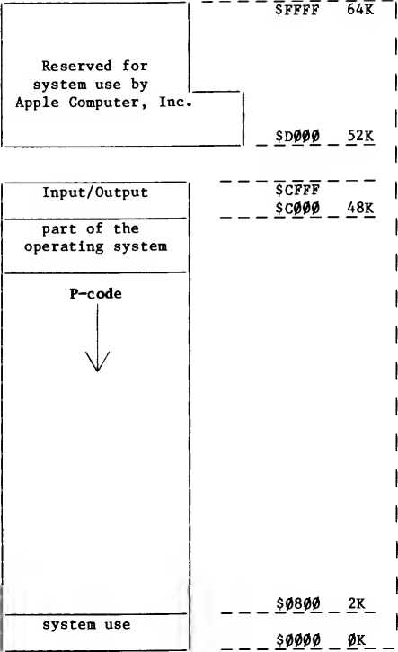

A summary of the differences between Apple Pascal Version 1.0 and Apple Pascal Version 11
TABLE OF CONTENTS
1 Introduction
1 Compatibility Between Versions
2 Faster Diskette Access
2 The Swapping Option
2 Upper and Lowercase Capability
2 Standardization of Suffixes .TEXT and .CODE
3 One-Drive Startup
3 Exec Files
3 Changes in the Editor
3 The Save Command
3 New Editor Prompts
3 Find and Replace: Expanded Capabilities
4 Formatting Changes
4 Additional Changes in the Editor
4 User Programs
5 Compiler Option Syntax
5 The "V" Option
5 Program Segmentation
5 The "Next Segment" Option
5 The "Swapping" Option
5 Turtlegraphics
5 System Librarian
6 Error Messages
6 File Space for Assembler and Compiler
6 Chaining Programs
6 FORTRAN: New Library Utility
6 Assembly-Language Identifiers
7 Memory Maps
7 Problems Fixed
SYSTEM.EDITOR SYSTEM.FILER SYSTEM.LIBRARY SYSTEM.LINKER SYSTEM.PASCAL SYSTEM.SYNTAX
The Apple® Pascal system Incorporates UCSD Pascal™ and Apple extensions for graphics and other functions. UCSD Pascal was developed largely by the Institute for Information Science at the University of California at San Diego, under the direction of Kenneth L. Bowles.
"UCSD Pascal" Is a trademark of The Regents of the University of California. Use thereof In conjunction with any goods or services Is authorized by specific license only and Is an Indication that the associated product or service has met quality assurance standards prescribed by the University. Any unauthorized use thereof Is contrary to the laws of the State of California.
NOTICE
Apple Computer Inc. reserves the right to make Improvements In the product described In this manual at any time and without notice.
DISCLAIMER OF ALL WARRANTIES AND LIABILITY
APPLE COMPUTER INC. MAKES NO WARRANTIES, EITHER EXPRESS OR IMPLIED, WITH RESPECT TO THIS MANUAL OR WITH RESPECT TO THE SOFTWARE DESCRIBED IN THIS MANUAL, ITS QUALITY, PERFORMANCE, MERCHANTABILITY, OR FITNESS FOR ANY PARTICULAR PURPOSE. APPLE COMPUTER INC.
SOFTWARE IS SOLD OR LICENSED "AS IS". THE ENTIRE RISK AS TO ITS QUALITY AND PERFORMANCE IS WITH THE BUYER. SHOULD THE PROGRAMS PROVE DEFECTIVE FOLLOWING THEIR PURCHASE, THE BUYER (AND NOT APPLE COMPUTER INC., ITS DISTRIBUTOR, OR ITS RETAILER) ASSUMES THE ENTIRE COST OF ALL NECESSARY SERVICING, REPAIR, OR CORRECTION AND ANY INCIDENTAL OR CONSEQUENTIAL DAMAGES. IN NO EVENT WILL APPLE COMPUTER INC. BE LIABLE FOR DIRECT, INDIRECT, INCIDENTAL, OR CONSEQUENTIAL DAMAGES RESULTING FROM ANY DEFECT IN THE SOFTWARE,
EVEN IF APPLE COMPUTER INC. HAS BEEN ADVISED OF THE POSSIBILITY OF SUCH DAMAGES. SOME STATES DO NOT ALLOW THE EXCLUSION OR LIMITATION OF IMPLIED WARRANTIES OR LIABILITY FOR INCIDENTAL OR CONSEQUENTIAL DAMAGES, SO THE ABOVE LIMITATION OR EXCLUSION MAY NOT APPLY TO YOU.
This manual Is copyrighted. All rights are reserved. This document may not, In whole or part, be copied, photocopied, reproduced, translated or reduced to any electronic medium or machine readable form without prior consent, In writing, from Apple Computer Inc.
©1980 by APPLE COMPUTER INC.
10260 Bandley Drive Cupertino, California 95014 (408) 996-1010
The word APPLE and the Apple logo are registered trademarks of APPLE COMPUTER INC.
This document lists the differences between Apple Pascal Version 1*1 and the previous version and, when appropriate, refers you to the manual or addendum that describes the new feature. The first part of this document outlines those changes that affect the overall operation of the system. The remaining sections (under USER PROGRAMS) describe changes that affect Pascal, FORTRAN, and assembly-language programs.
COMPATIBILITY BETWEEN VERSIONS
The diskettes for Apple Pascal Version 1.1 Include all of the files that were Included with the previous version. Many of these files have been revised. There are certain files on the Version 1.1 diskettes that should not be replaced with the file having the same name that came with the previous version. Similarly, certain files that came with the the previous version should not be replaced with the file having the same name that came with Version 1.1. Files that should not be replaced Include:
FORMATTER.CODE FORMATTER.DATA LIBMAP.CODE LIBRARY.CODE SYSTEM.APPLE SYSTEM.ASSEMBLER SYSTEM.COMPILER
You may use all of your old code flies with the new version of Pascal without recompiling or reassembling. You also may use your old text files. Be sure, however, that the Swapping option Is set to ON If a file being read Into the Editor Is longer than 34 blocks or If a program that you are running causes stack overflow. (The Swapping option Is explained In the Addendum to the Apple Pascal Operating System Reference Manual.)
If you have any textfiles which, according to the Filer s List directory or Extended directory list command, occupy more than 40 blocks, you should use the old version of the Editor to divide the file Into two parts before reading the file Into the Version 1.1 Editor.
APPLE Part #030-0184-00
FASTER DISKETTE ACCESS
ONE-DRIVE STARTUP
You will notice that all commands that require the system to read information from a diskette work much more quickly with Version 1.1 than with the previous version. This is because of modifications in the Pascal Operating System's diskette reading routines. You should notice a significant increase in performance speed in
- Command level options Compile, Assemble
- Filer commands Bad-blocks, Get, Krunch, New, Transfer,
Examine
- Editor commands Copy From file, Set Environment
The one—drive startup has been modified so that you now receive the prompt:
INSERT BOOT DISK WITH SYSTEM.PASCAL ON IT. THEN PRESS RESET
after diskette APPLE3 has been placed in the disk drive. To complete the booting process, insert APPLE0 and then press RESET. The entire one—drive startup procedure is described in the Addendum to the Apple Pascal Language Reference Manual. Note that the one-drive startup described in the manual itself is not correct.
THE SWAPPING OPTION
Apple Pascal Version 1.1 includes a system swapping option that allows you to maximize the space available in the Apple's memory. In the previous version, the maximum user program space was 39600 bytes; in Version 1.1, it is 37700 with swapping OFF or 39900 with swapping ON. The Swapping option is explained in the Addendum to the Apple Pascal Operating System Reference Manual.
EXEC FILES _
Apple Pascal Version 1.1 allows you to create Exec files. For a complete explanation, see the Addendum to the Apple Pascal Operating System Reference Manual.
CHANGES IN THE EDITOR
UPPER AND LOWERCASE CAPABILITY
Version 1.1 of Apple Pascal gives you the capability to shift the keyboard into lowercase (and back into uppercase) at any time and to cause uppercase letters to be displayed on the screen in reverse video (black on white) to distinguish them from lowercase letters. For an explanation of these new features see the Addendum to the Apple Pascal Operating System Reference Manual.
STANDARDIZATION OF SUFFIXES .TEXT AND .CODE
Apple Pascal Version 1.1 is consistent as to when a user must add the suffix .TEXT or .CODE to a filename. Rules describing when to use .TEXT and .CODE with Version 1.1 are listed in Appendix D of the Apple Pascal Operating System Reference Manual.
THE SAVE COMMAND
The Save command is a new option that is available to you after you type Q to exit from the Editor. This command minimizes the need to enter the Filer to access and save files, and can also reduce the number of times you need to use the Krunch command to consolidate the files stored on a diskette. The Save command is described in the chapter on the Editor in the Apple Pascal Operating System Reference Manual.
NEW EDITOR PROMPTS
The Version 1.1 Pascal Editor includes several prompts that were not present in the Version 1.0 Editor. These prompts are described in the Addendum to the Apple Pascal Operating System Reference Manual and in the chapter on the Editor in the manual itself.
FIND AND REPLACE: EXPANDED CAPABILITIES
The Version 1.1 Find and Replace commands can be used to locate a string of characters within text regardless of whether the characters in the text are of the same case (upper/lower) as the characters in the target string. This capability is described in the Addendum to the Apple Pascal Operating System Reference Manual.
FORMATTING CHANGES
When Auto Indent is set to False and Filling is set to True, the Version 1.1 Editor automatically places two spaces after each occurrence of a period, question mark, exclamation mark, or colon (if it has any space after it). The new editor also will automatically place two spaces after the characters close parenthesis, single quote, and double quote, if the character immediately preceding that character is one of the following: period, question mark, exclamation
point, or colon. Note that automatic spacing will only occur when Filling is set to True and Auto Indent is set to False. Otherwise, the system will leave spaces exactly as you have typed them.
The new Editor treats hyphens in the same way that it treats all other characters. Thus, the system will not break a word at the hyphen when the Margin command is used.
ADDITIONAL CHANGES IN THE EDITOR
When executing the Copy Buffer command, the previous version of the Editor sometimes copied from the buffer to the line before the line containing the cursor. The Copy Buffer command now inserts the copied material on the correct line.
The Pascal Editor does not allow you to use the Editor's Write command to write a file to CONSOLE: or to PRINTER:. If you attempt to do
this, you will receive the message:
THIS IS NOT AN EDITOR FUNCTION
You then will be returned to the Editor with your file intact. This error message did not exist in the previous version.
When executing the Copy From file command, the previous version of the Editor sometimes misplaced the control characters contained in the beginning of text files. These misplaced characters caused the following Compiler error:
ILLEGAL CHARACTER IN TEXT
This problem has been eliminated in the Version 1.1 Editor.
The Editor will no longer clobber your file when its buffer is almost full.
USER PROGRAMS
This section describes changes that affect the writing, preparation, and execution of programs by the user.
COMPILER OPTION SYNTAX
Compiler options are no longer required to be capitalized; capital and lower-case letters are interchangeable.
THE “V” OPTION
This is a new Compiler option to check the length of VAR parameters of type STRING. It is described in the Addendum to the Apple Pascal Language Reference Manual.
PROGRAM SEGMENTATION
The new system software allows a program codefile to contain up to 16 segments — one for the program itself, and up to 15 for Regular UNITs, SEGMENT procedures, and SEGMENT functions. The previous version only allowed 6 segments in the codefile (because 10 were unusable). For a complete discussion of program segmentation, see the Addendum to the Apple Pascal Language Reference Manual.
THE “NEXT SEGMENT” OPTION
This is a new option that allows you to specify the segment number to be assigned to the next Regular UNIT, SEGMENT procedure, or SEGMENT function encountered by the Compiler. It is described in the Addendum to the Apple Pascal Language Reference Manual.
THE “SWAPPING” OPTION
With the S+ option of the Compiler, the extra space available for symbol-table storage is about 5300 words (compared to about 3900 in the previous version). Going from S+ to S++ gives the same amount of extra space as it did in the previous version (about 1500 more words).
TURTLEGRAPHICS
The system will automatically return to text mode if a program teniinates while in graphics mode. This applies both to normal termination and to a halt caused by a run-time error.
SYSTEM LIBRARIAN
In the previous version, the LIBRARY utility prompt lines referred to the slots in the segment dictionary as "segments." This caused confusion as slot numbers and segment numbers are two different things. These prompt lines have been changed.
Also, it is no longer necessary to reinitialize the system after changing the SYSTEM.LIBRARY file.
ERROR MESSAGES
The following new compiler error messages have been added:
175: Actual parameter max string length < var formal max
length
408: (*$S+*) Needed to compile units
The following new Assembler error message has been added:
500: General assembler error
FILE SPACE FOR ASSEMBLER AND COMPILER
In Version 1.1, when the code file is automatically sent to the workfile the default size for the file is [*]. In all other cases, the default size is [0], which means that the code file will be allocated all of the largest space available on the diskette that it is sent to. If there is only one available space on the diskette, the code file takes all of it.
This can cause problems if the code file is on the boot diskette or on the same diskette used for the listing file. The Assembler requires some space on the boot diskette for temporary files, and will fail if the code file takes all of the space on the boot diskette. Likewise, the Assembler or Compiler will fail if it tries to create a listing file and the code file has taken all the available space on the specified diskette.
If you run into these problems, specify a different diskette for the code file or the listing file, or specify a definite length for the code file that will leave enough room for other required files.
CHAINING PROGRAMS
Version 1.1 provides a new UNIT called CHAINSTUFF in the SYSTEM.LIBRARY file. CHAINSTUFF contains procedures that allow a program to "chain" to another program; that is, the second program is automatically executed as soon as the first program terminates. For details, see the Addendum to the Apple Pascal Language Reference Manual. ~
FORTRAN: NEW LIBRARY UTILITY
The Version 1.1 library utility program LIBRARY.CODE works correctly with FORTRAN libraries and must be used instead of FORTLIB.CODE. (In the previous version, LIBRARY.CODE could not be used with FORTRAN.)
ASSEMBLY-LANGUAGE IDENTIFIERS
To be consistent with the Compiler, the new version of the Assembler ignores underscore characters in identifiers. (The underscore character cannot be typed on the Apple II keyboard, but is available on some external terminals.)
Because of this, an assembly-language program that has underscores in any identifiers may not assemble correctly, even though it assembled correctly with the previous version of the Assembler.
MEMORY MAPS
The memory maps for the system at run time have been changed. Note that the memory maps shown in both old and new manuals are inaccurate; however, you should not need this information for most Pascal applications, since normal Pascal programs cannot use physical addresses and the system provides all necessary memory management.
PROBLEMS FIXED
The following problems in the previous version have been fixed:
1. The Compiler will no longer damage a diskette directory when writing out a program listing.
2. Separate UNITs have been deleted from the system.
3. A Regular UNIT can now use an Intrinsic UNIT. An Intrinsic UNIT cannot use a Regular UNIT; this is a system limitation.
4. You can now declare files in Intrinsic UNITs.
5. The NOLOAD option will now work correctly with an Intrinsic UNIT that has a data segment.
6. The Compiler will no longer mistakenly load segments 28..31.
7. The Compiler will no longer issue an erroneous error message number 407.
8. The Q+ Compiler option now works correctly.
9. The "Include file" Compiler option now works correctly with a filename in any legal form, including filenames with the used to indicate the boot diskette.
10. LONG INTEGER constants are now recognized correctly.
11. LONG INTEGER comparisons now work correctly.
12. The IN operator now works correctly when the first operand is negative or greater than 511 (always giving a FALSE result since these values cannot be set members).
13. The ORD function will no longer accept a parameter of type REAL.
14. WRITE and WRITELN will now correctly write the value -32768. (However, the constant -32768 cannot be used except as a parameter to WRITE or WRITELN.)
15. The / operator for REAL division will now accept INTEGER operands, giving a REAL result.
16. The MEMAVAIL function now works correctly.
17. Comparisons of REAL values now work correctly.
18. The ATAN function in the TRANSCEND unit now works correctly, even with an actual parameter value less than -1.(3.
19. The TTLOUT procedure in the APPLESTUFF unit now works.
2(3. Assembler variables declared .PUBLIC and .PRIVATE will now be correctly relocated at run time.
21. The Assembler will now detect an error if it finds an operation with no operands, and the operation is one that requires operands (e.g., LDA).
22. The Assembler will no longer misinterpret a semicolon embedded in a .ASCII string as the beginning of a comment.
23. The Assembler now has standard conventions for specifying a filename for the assembly listing file; i.e., the suffix .TEXT is supplied if no suffix is given.
24. The Assembler option .NOMACROLIST now works correctly.
25. The Assembler now converts all input characters to upper case, except in comments and .ASCII strings.
26. The Assembler will now detect an illegal command (such as STA #4) as an error instead of generating an illegal opcode.
27. The Assembler's listing file will now have the correct jump offset for a forward relative jump.
28. When a program is interrupted by typing the BREAK character (ctrl-@), the correct message will always be given. However, typing the BREAK character will not always interrupt the program because Apple II I/O is not interrupt-driven.
29. A BOOLEAN value is internally represented as a 16-bit quantity, of which only Bit (3 is meaningful. Normally, Bits 1..15 are all (3's. The NOT operator, however, complements all 16 bits, leaving l's in Bits 1..15. Also, the ODD function returns a BOOLEAN value that may have some l's in Bits 1•.15.
The previous version assumed that Bits 1..15 of a BOOLEAN value were always (3's, which led to occasional incorrect results such as NOT TRUE not being equal to FALSE on a comparison using the = operator. Version 1.1 clears Bits 1..15 of a BOOLEAN value to (3's in the following cases (where B, C, and D represent BOOLEAN values):
- CASE B OF ... (Any CASE statement controlled by a BOOLEAN value)
- FOR B :* C TO D DO ... (Any FOR statement controlled by a BOOLEAN value)
- BOOLARRAY[B] (BOOLEAN value used to index any array that has a BOOLEAN index type)
- B IN SETOFBOOLEANS (Any test for set membership in a SET OF BOOLEAN)
- [B] (Any use of a BOOLEAN value in a set constructor).
Generally, BOOLEAN values will work correctly even if they have l's in Bits 1..15, with the exception of one case: the ORD function with a BOOLEAN parameter will return a value other than (3 or 1 if the BOOLEAN value has any l's in Bits 1..15.
3(3. There was a problem which occasionally caused wrong values to be stored in a PACKED ARRAY OF BOOLEAN. This has been fixed.
31. The CROSSREF demonstration program now correctly closes its files before terminating.
Customer Satisfaction
If you discover physical defects in the manuals distributed with an Apple product or in the media on which a software product is distributed, Apple will replace the documentation or media at no charge to you during the 90-day period after you purchased the product.
In addition, if Apple releases a corrective update to a software product during the 90-day period after you purchased the software, Apple will replace the applicable diskettes and documentation with the revised version at no charge to you during the six months after the date of purchase.
In some countries the replacement period may be different; check with your authorized Apple dealer. Return any item to be replaced with proof of purchase to Apple or an authorized Apple dealer.
Limitation on Warranties and Liability
Even though Apple has tested the software described in this manual and reviewed its contents, neither Apple nor its software suppliers make any warranty or representation, either express or implied, with respect to this manual or to the software described in this manual, their quality, performance, merchantability, or fitness for any particular purpose. As a result, this software and manual are sold “as is, ” and you the purchaser are assuming the entire risk as to their quality and performance. In no event will Apple or its software suppliers be liable for direct, indirect, incidental, or consequential damages resulting from any defect in the software or manual, even if they have been advised of the possibility of such damages. In particular, they shall have no liability for any programs or data stored in or used with Apple products, including the costs of recovering or reproducing these programs or data. Some states do not allow the exclusion or limitation of implied warranties or liability for incidental or consequential damages, so the above limitation or exclusion may not apply to you.
Copyright_
This manual and the software (computer programs) described in it are copyrighted by Apple or by Apple's software suppliers, with all rights reserved. Under the copyright laws, this manual or the programs may not be copied, in whole or part, without the written consent of Apple, except in the normal use of the software or to make a backup copy. This exception does not allow copies to be made for others, whether or not sold, but all of the material purchased (with all backup copies) may be sold, given or loaned to another person. Under the law, copying includes translating into another language.
You may use the software on any computer owned by you but extra copies cannot be made for this purpose. For some products, a multi-use license may be purchased to allow the software to be used on more than one computer owned by the purchaser, including a shared-disk system. (Contact your authorized Apple dealer for information on multi-use licenses.)
Product Revisions
Apple cannot guarantee that you will receive notice of a revision to the software described in this manual, even if you have returned a registration card received with the product. You should periodically check with your authorized Apple Dealer.
© 1981, 1982, 1983 by Apple Computer, Inc.
20525 Mariani Avenue Cupertino, California 95014 (408) 996-1010
Apple and the Apple logo are registered trademarks of Apple Computer, Inc.
Simultaneously published in the U.S.A. and Canada. All rights reserved.
Apple II
Apple Pascal 1.2 Update Manual
ACKNOWLEDGMENTS
The Apple®Pascal system incorporates UCSD Pascal™ and Apple extensions for graphics and other functions. UCSD Pascal was developed largely by the Institute for Information Science at the University of California at San Diego, under the direction of Kenneth L. Bowles.
"UCSD Pascal" is a trademark of The Regents of the University of California. Use thereof in conjunction with any goods and services is authorized by specific license only and is an indication that the associated product or service has met quality assurance standards prescribed by the University. Any unauthorized use thereof is contrary to the laws of the State of California.
LIST OF FIGURES AND TABLES
CHAPTER 1
INTRODUCTION TO PASCAL 1.2
3 Symbols Used in This Manual
4 What Is Pascal 1.2?
4 Who Needs Pascal 1.2?
5 How to Use This Manual
6 About Your Pascal 1.2 Software 6 The Pascal 1.2 Disks
6 Making Copies for Backup
7 Mixing Pascal 1.1 and Pascal 1.2
8 Running Version-1.1-Compiled Programs Under 1.2
8 Using Your New Software Right Away
9 Starting Up a One-Drive System 9 Starting Up a Two-Drive System
CHAPTER 2
NEW PASCAL FEATURES
13 Features for All Apple II Computers
13 Improved Disk-Formatting Program
14 A Changed Two-Stage Startup or "Boot"
14 A New Line on the Pascal Startup Screen
14 If You Do Not Put Back the Startup Disk
15 The Percent Prefix
16 Accessing Files During Program Execution
17 Chaining to Other Programs During Execution
17 A New Swapping Option
19 Additional Block Volume Units
19 Error Message: Too Many Program Segments 19 Control Characters Not Echoed to the Screen
19 Hand-Control Buttons and the SHIFT Key
20 The CTRL-] Function
20 Features for the Apple lie Computer 20 Lowercase and Uppercase Both Available 20 Four Cursor Keys Now Available
20 Keystroke Functions Not Used
21 OPEN-APPLE, SOLID-APPLE, and SHIFT Keys
TABLE OF CONTENTS iii
21 Apple lie's With Foreign Keyboards
21 User Break During Program Execution
22 Special MISCINFO Files and How to Use Them
24 Steps for 40-Column Apple II Users
25 Steps for 80-Column Apple II Users
25 Steps for 40-Column Apple lie Users
THE PASCAL 128K SYSTEM
29 The Extended 80-Column Text Card
30 Making a 128K System Startup Disk
32 128K System User Error Messages
33 128K System Memory Organization
38 Memory Organization Features
38 Managing Auxiliary Memory
40 Additional Segments
40 How to Use the New Libraries
40 Important Definitions
42 Comparing Libraries Under the 64K and 128K Systems
45 Making a Library Name File
46 Using the Library Name File
46 Using One Library File With Two Programs
47 Using Several Library Files With One Program
49 Using the Percent Prefix in a Library Name File
50 How the System Searches Libraries
TIPS FOR PROGRAMMERS_
55 A New Swapping Procedure for Programs 57 A New Function Checks a Remote Device 59 Four New Screen-Control Characters
59 The "Ignore External Terminal" Flag: Apple II and Apple lie
60 The OPEN-APPLE, SOLID-APPLE, and SHIFT Key Controls
61 The High-Bit Test for the OPEN-APPLE Key 64 The UNITSTATUS Test for All Three Keys
66 Three Special Identification Flags
67 Flag to Check the Computer Type
68 Flag to Check the Pascal System Version
68 Flag to Check the Interpreter Version
69 Two Important Pointer Locations
70 New Values for the Up-Arrow and Down-Arrow Keys
71 Reading the Up-Cursor and Down-Cursor Values
72 Changes to the SEEK and PUT Procedures
73 Two Features No Longer Operative
BUG FIXES IN PASCAL 1.2
|
77 Compiler Bugs 78 Assembler Bugs 79 Linker Bugs 79 LIBRARY.CODE Bug 79 LIBMAP.C0DE Bug 79 SEEK/PUT Bugs 80 80 Input/Output Bugs 80 Turtlegraphics Bugs 81 Miscellaneous Execution-Time Bugs APPENDIX B THE FILES ON THE PASCAL 1.2 DISKS |
83 | |
|
APPENDIX C ERROR MESSAGES |
85 | |
|
87 Compiler Error Messages 90 New Assembler Error Message APPENDIX D ACTIVATING THE SHIFT-KEY MOD |
91 | |
|
INDEX |
93 | |
|
UCSD PASCAL SYSTEM USER’S SOCIETY (USUS) |
97 | |
|
USUS MEMBERSHIP APPLICATION |
99 | |
CHAPTER 1: INTRODUCTION TO PASCAL 1.2
|
7 |
Table 1-1. |
Summary of Files on the Pascal 1.2 Disks |
|
CHAPTER 2: NEW |
PASCAL FEATURES | |
|
18 |
Table 2-1. |
Swapping Options Available at the System Level |
|
23 |
Table 2-2. |
Options for Customizing Screen Width |
|
CHAPTER 3: THE |
PASCAL 128K SYSTEM | |
|
34 |
Figure 3-1. |
The Pascal 64K System: Apple II and lie |
|
36 |
Figure 3-2. |
The Pascal 128K System: Apple lie |
|
39 |
Table 3-1. |
Pointers for the Pascal 128K System (Hexadecimal Values) |
|
41 |
Figure 3-3. |
The File Pathname |
|
45 |
Table 3-2. |
Pascal Library Options: 64k and 128K Systems |
|
CHAPTER 4: TIPS |
FOR PROGRAMMERS | |
|
57 |
Table 4-1. |
Swapping Options You Can Set From Programs |
|
59 |
Table 4-2. |
New Screen-Control Characters |
|
61 |
Table 4-3. |
Testing for Use of OPEN-APPLE, SOLID-APPLE, and SHIFT Keys |
|
67 |
Table 4-4. |
Hardware Identification Bit Settings |
|
69 |
Table 4-5. |
Version Flags Set at Location -16606 ($BF22 Hex) |
|
70 |
Table 4-6. |
Two Pascal Pointers |
APPENDIX D: ACTIVATING THE SHIFT-KEY MOD
92 Table D-l. SHIFT-Key Mod Character Translations 92 Table D-2. Effects of an Activated and Inactivated SHIFT-Key Mod
CHAPTER 1
3 SYMBOLS USED IN THIS MANUAL
4 WHAT IS PASCAL 1.2?
4 WHO NEEDS PASCAL 1.2?
5 HOW TO USE THIS MANUAL
6 ABOUT YOUR PASCAL 1.2 SOFTWARE 6 The Pascal 1.2 Disks
6 Making Copies for Backup
7 Mixing Pascal 1.1 and Pascal 1.2
8 Running Version-1.1-Compiled Programs Under 1.2
8 Using Your New Software Right Away
9 Starting Up a One-Drive System 9 Starting Up a Two-Drive System
CHAPTER 1
In this chapter, you will learn about the main features of Pascal 1.2 and how to use this manual.
SYMBOLS USED IN THIS MANUAL
This manual uses three symbols to call your attention to important points:
This means the adjacent paragraph contains information especially useful to you—a "helping hand."
This tells you to be alert. The adjacent indented paragraph describes an unusual aspect of Pascal 1.2.
This stop sign is a warning. Pay attention! The adjacent indented paragraph describes an action that could be hazardous to the program or files you are using, or to your computer hardware.
HOW TO USE THIS MANUAL
WHAT IS PASCAL 1.2?
Apple II Pascal combines a language and an operating system. You can use It on an Apple lie computer or on an Apple II or II Plus computer that has at least 48K memory capacity and an Apple Language Card.
From this point on in this manual, the term "Apple II" refers to both the Apple II and the Apple II Plus, as distinguished from the Apple lie.
Pascal 1.2 is an improved version of Pascal 1.1. The basic program design and the way the user interacts with it have not changed. The improvements consist of new features, corrections of bugs, a 128K system, and various modifications supporting the use of the Apple lie computer.
Pascal 1.2 consists of four system disks labeled
APPLE0:
APPLE1:
APPLE2:
APPLE3:
and a set of two manuals in addition to this 1.2 Update manual:
• Apple Pascal Language Reference Manual (with Addendum)
• Apple Pascal Operating System Reference Manual (with Addendum)
You should first page through this manual to become familiar with its topics and the kinds of reference aids available in the Appendixes.
If you are a new user of Apple II Pascal, you should learn the Pascal system by studying the set of original Pascal manuals and addenda, and by practicing the use of various components, such as the Pascal Editor, Filer, Compiler, and so on. Then you should go to Chapter 2 of this manual, "New Pascal Features," which discusses in detail the improvements to Pascal and certain options available within the system.
If you are a practiced user of Apple II Pascal, you should scan the contents of this manual for what might be helpful to you, particularly Chapter 2, "New Pascal Features," and Chapter 4, "Tips for Programmers."
If you are an Apple lie user, you should read the description of Pascal modifications supporting the Apple lie in Chapter 2, "New Pascal Features."
If you use the 40-column screen width on an Apple II or lie, or the 80-column screen width on an Apple II, you should read the section in Chapter 2 called "Special MISCINFO Files and How to Use Them" before using your Pascal 1.2 system.
If you are now using or plan to use the Apple lie with the
Extended 80-Column Text Card, read Chapter 3, "The Pascal 128K System."
Appendix A is a list of bugs in Pascal 1.1 that have been fixed in Pascal 1.2.
Appendix B gives a complete list of the files on the Pascal 1.2 disks.
Appendix C presents an updated list of all Compiler error messages, as well as the one new Assembler error message.
Appendix D explains how to activate the SHIFT-key modification in the event that this hardware change has been made to your computer and you want your Pascal system to use it.
The Disk
APPLE0:
APPLE 1:
APPLE2:
APPLE3:
ABOUT YOUR PASCAL 1.2 SOFTWARE
Your time will be well spent if you take a few minutes now to get acquainted with your Pascal software before starting up the system.
Table 1-1 is a summary of the contents of each Pascal 1.2 disk. You may arrange these files to suit your special text-editing or program-development needs. (See Appendix B for an itemized list of the files on the four Pascal 1.2 disks. You will find a table that describes the individual system files In Appendix D of the Apple Pascal Operating System Reference Manual.)
As a precaution, however, you should not rearrange the files on the original disks or on the backup copies you will make. Rather, you should prepare a special, customized disk, transferring those files to It that you want together.
Before going on, make a copy of each Pascal 1.2 system disk for your everyday use, storing the originals as backups in case of disk damage or unusual wear. See Appendix D In the Apple Pascal Language Reference Manual for directions on making backup disks.
Its General Contents and Purpose
Contains all the files needed to edit and run Pascal programs, especially on a one-drive system; it Includes SYSTEM.COMPILER, but not SYSTEM.APPLE, which is needed to start up the system. This is the second of two disks used for a two-stage startup on a one-drive system.
Contains all the files you need to edit text and to start up the system. In conjunction with the APPLE2: disk, it is used to Compile or Run your text.
Contains the Compiler, Linker and Assembler, as well as certain other program-development tools.
Contains SYSTEM.APPLE, the Formatter program, a few demonstration programs for the general user, and the files named 128K.PASCAL and 128K.APPLE, which are special versions of system files needed for using the additional memory available with the Apple lie Extended 80-Column Text Card. It also contains three specialized MISCINFO files: 1140.MISCINFO, IIE40.MISCINFO, and 1180.MISCINFO. This Is the first of two disks used for a two-stage startup.
Table 1-1. Summary of Files on the Pascal 1.2 Disks
You should not mix any system files from the two versions of Apple II Pascal. The two versions are incompatible because essentially all of the files were changed in the updating from Pascal 1.1 to 1.2.
The Pascal 1.2 operating system (in the SYSTEM.PASCAL file) and the other components of the Pascal system (the Filer, Editor, Compiler, Assembler, Linker, and others) must work together as a unit. The 1.2 operating system—any 1.2 component, in fact—should not be run with a 1.1 version of any other Pascal component. The operating system will check for this condition at execution time and notify you of an incorrect version of a Pascal system component.
In general, version 1.2 is compatible with application programs that were compiled under version 1.1, allowing you to run programs under Pascal 1.2 that were designed to run under Pascal 1.1. In special circumstances, however, you might have to make one or both of the following changes:
• You may have to upgrade the original SYSTEM.LIBRARY file that supported the application program and resides on the program disk. The reason is that in the Pascal 1.2 SYSTEM.LIBRARY, these units have been changed or are affected by changes in the operating system:
PASCALIO
CHAINSTUFF
LONGINTIO
TURTLEGRAPHICS
Consequently, if you have on a program disk a Pascal 1.1 SYSTEM.LIBRARY file with any of these units, you will need to replace such units with their counterparts from the Pascal 1.2 SYSTEM.LIBRARY. You change units in a SYSTEM.LIBRARY file by means of the Pascal Librarian program explained in Chapter 8 of the Apple Pascal Operating System Reference Manual.
• You may have to change the program to get the correct values for the up-cursor and down-cursor keys, if the program uses these because programs hard-coded to check for the Pascal 1.1 up-cursor and down-cursor keyboard values will not work properly if run under Pascal 1.2. You will need to change such programs to obtain the new values from the Pascal 1.2
SYSTEM.MISCINFO file at load time.
If you are using an Apple He with an 80-column card and know how to start up and use the Pascal language and operating system, you can use Pascal 1.2 right away. However, if you use an Apple II or an Apple lie without an 80-column card, you should change SYSTEM.MISCINFO files according to the directions given in the third section of Chapter 2, "Special MISCINFO Files and How to Use Them."
To start up Pascal 1.2 on a one-drive system, follow these steps:
1. Insert APPLE3: in the drive.
2. If the computer's power is off, turn it on. If it is already on, press CONTROL-RESET (on an Apple II) or CONTROL-OPEN-APPLE-RESET (on an Apple lie).
In some cases, such as after running a copy-protected program, you may have to turn the power off, then on.
3. After the message
"Insert boot disk with SYSTEM.PASCAL on it, then press RETURN"
appears on the screen, insert APPLE0: in the drive and press RETURN.
Once you have started the system, you can restart it by selecting Halt or Initialize from the command line (with APPLE0: in the drive).
To start up Pascal 1.2 on a two-drive system, follow these steps:
1. Insert APPLE 1: in drive 1.
2. If the computer's power is off, turn it on. If it is already on, press CONTROL-RESET (on an Apple II) or CONTROL-OPEN-APPLE-RESET (on an Apple lie).
In some cases, such as after running a copy-protected program, you may have to turn the power off, then on.
Once you have started system, you can restart it by selecting Halt or Initialize from the command line (with APPLE1: in drive 1).
CHAPTER 2
13 FEATURES FOR ALL APPLE II COMPUTERS
13 Improved Disk—Formatting Program
14 A Changed Two-Stage Startup or "Boot"
14 A New Line on the Pascal Startup Screen
14 If You Do Not Put Back the Startup Disk
15 The Percent Prefix
16 Accessing Files During Program Execution
17 Chaining to Other Programs During Execution 17 A New Swapping Option
19 Additional Block Volume Units
19 Error Message: Too Many Program Segments
19 Control Characters Not Echoed to the Screen
19 Hand-Control Buttons and the SHIFT Key
20 The CTRL-] Function
20 FEATURES FOR THE APPLE HE COMPUTER 20 Lowercase and Uppercase Both Available 20 Four Cursor Keys Now Available
20 Keystroke Functions Not Used
21 OPEN-APPLE, SOLID-APPLE, and SHIFT Keys 21 Apple He's With Foreign Keyboards
21 User Break During Program Execution
22 SPECIAL MISCINF0 FILES AND HOW TO USE THEM
24 Steps for 40—Column Apple II Users
25 Steps for 80—Column Apple II Users 25 Steps for 40-Column Apple lie Users
CHAPTER 2
Whether you use a standard Apple II, Apple II Plus, or Apple lie computer, the first section of this chapter tells you about new Pascal features you may use. If you use an Apple lie, you should read the second section as well. Also read the third section, on special MISCINFO files, if you use an Apple II or an Apple lie with a 40-column screen.
FEATURES FOR ALL APPLE II COMPUTERS
The following changes are important for all users of Pascal 1.2 on any Apple II or lie computer.
The program that prepares a new disk before it can be used—the Pascal Formatter—has improved, more meaningful error messages. The same two disk files are used as before:
FORMATTER.CODE - found on disk APPLE3:; used in any drive.
FORMATTER.DATA - incorrectly called "FORMATTER.TEXT" in the Apple Pascal Operating System Reference
Manual; found on disk APPLE3:; used in any drive.
After you type X FORMATTER.CODE, you see this revised screen message: APPLE PASCAL DISK FORMATTER PROGRAM [1.2]
FORMAT WHICH DISK (4, 5, 9..12) ?
The Formatter error messages have been revised and increased in number to help you better understand, why the program is having trouble formatting your disk. These are the error messages that you might see displayed:
• Disk is write protected
• Unable to format diskette
• Drive speed is too slow
• Drive speed is too fast
For instructions on using the Formatter, see the Apple Pascal Operating System Reference Manual, Chapter 8.
If you use a two-stage startup procedure to begin running your Pascal 1.2 system, you will find an important change in the prompt that comes on your screen after you start up your first system disk. You will be directed to insert your second startup disk (one containing SYSTEM.PASCAL)' and press RETURN. (Under Pascal 1.1, the prompt asked you to press RESET. Now, if you press RESET by itself, nothing will happen.) For information on how to start up ("boot") your system, see the end of Chapter 1 of this manual and see Chapter 2 of the Apple Pascal Operating System Reference Manual.
The Pascal startup screen now displays a new line that specifies whether the Pascal interpreter and operating system you are using are 64K or 128K. Every time you start up Pascal 1.2, the first screen display to appear will include either the words
Pascal System Size is 64K
or the words
Pascal System Size is 128K
(The Pascal 128K system is discussed in Chapter 3 of this manual.)
If the system returns to the command line and you have not put the startup disk back in drive 1, you now see an expanded reminder on the screen:
Put in <boot diskette>: then press RETURN
Under Pascal 1.1, only the first line of the message appears, and drive 1 spins continuously until you insert the correct startup disk
Pascal 1.2 gives you a tool that makes your program independent of volume names. You can now use the percent character (%) as a prefix to a filename to mean "the same volume name as the executing program."
For example, if the program
MYFILE:MIX.CODE
is currently being executed, the percent prefix can be used to represent the volume name
MYFILE:
during the execution of this program and until another program is executed.
Instead of giving the volume name and filenames of files used by the program, such as
MYFILE:DATA1 MYFILE:DATA2
your program can now simply specify them by attaching the percent prefix to their filenames:
%DATA1
%DATA2
The percent prefix allows you to write an application program that can call files without hard-coding volume names into it. The application can be on any volume in the system as long as the files used by the program reside on the same volume. Moreover, the user can move the program and its related files to another volume in the system—flexible (sometimes called "floppy") disk or rigid disk—without changing the program.
To use the percent prefix, you first place the files, such as the data files just mentioned, in the same volume as the executing program, and then you use the percent prefix, whenever you need it, as a substitute for the volume name. This capability frees you from having to know and use the volume name of the program file (and of the program's library and data files).
When you execute a program, the percent prefix is set as soon as the system has determined that the volume name and filename are valid and refer to an actual file. (The volume that contains this file must be on line.) The prefix is not set to another volume name while the current program is executing, but when you execute another application
MYFILE: MIX.CODE DATA1 DATA2
MASTERPLAN: PARAMS.CODE BUDGET.CODE GOALS.CODE FORECST.CODE
program, or a system program such as the Pascal Filer, Editor, or Compiler, then the percent prefix is set by the system to another volume name, which is that of the new program.
Although you can use the percent prefix at the system level—for example, with the List or Transfer command of the Filer—note that it has three basic uses within a_ program:
• accessing files during program execution (discussed later in this chapter)
• chaining to other programs during execution (discussed later in this chapter)
• naming files in a Library Name File (128K system only, discussed in Chapter 3)
Most application programs require the use of numerous files (like data files, output files, temporary files, and so forth) during execution. These files usually reside in the same volume as the main program. Using the percent prefix, you can specify these files in the main program without having to know their volume name. For example, if the program MIX.CODE uses the files DATA1 and DATA2, you would want to group the set of programs in the same volume: {a volume}
{an executable program} {a data file}
{a data file}
Then in the source code for program MIX.CODE, you can specify the two data files using the percent prefix in these strings:
%DATA1
%DATA2
Here are two examples of source code showing possible uses of the percent prefix:
When your program uses chaining, you can use the percent prefix to specify the volume name of the program to be chained to. For example, if you want the set of programs {a volume}
{an executable program} {an executable program} {an executable program} {an executable program}
to be executed in the order GOALS.CODE —> PARAMS.CODE —> BUDGET.CODE —> FORECST.CODE, you use these calls to the SETCHAIN procedure:
• In GOALS.CODE use the procedure call
SETCHAIN('%PARAMS');
• In PARAMS.CODE use the procedure call SETCHAIN('%BUDGET');
• In BUDGET.CODE use the procedure call SETCHAIN('^FORECST');
By using the percent prefix when specifying the next file to be chained to, you avoid having to know the file's volume name. To start running the programs in the chain, you execute MYFILE:GOALS. Again, all that is necessary is that you place the files on line and in the same volume.
Chaining to a program during execution is explained in the Apple Pascal Language Reference Manual Addendum.
Version 1.2 of the Pascal operating system makes available 822 additional bytes of memory that can be used for any activity that needs more system memory.
RESET(A_FILE, '%DATA1');
REWRITE(B_FILE, '%DATA2');
Thus you do not have to specify the actual volume name (in this case, MYFILE:). You are free to place this set of files in any volume, with any name, as long as they all reside in the same volume and as long as that volume is cm line at the time of program execution.
Application program writers should not depend on this extra memory being available in the future because
Apple Computer, Inc. has reserved it for future use. No more memory is guaranteed than that available under Pascal 1.1.
To obtain this additional memory, you will need to use the revised Swap command accessed from the command line. The new prompt screen for the Swap command gives three swapping options. The first two correspond to
the old "toggle" option that permitted you to turn swapping on or off and that made available 2,234 extra bytes of memory. The third option provides the additional memory. (Table 2-1 lists the three swapping options.)
The new swapping option provides more space by moving the procedures GET and PUT from disk to main memory only as they are needed by your program. To do this, set swapping to "2" from the prompt screen that appears up when you type "S" for Swap from the command line.
Eight new units, numbers 13 through 20, have been added to the original available block units, numbers 4, 5, 9..12. The operating system treats the new units the same as it did the original ones when, for example, it scans units as it looks for a particular system program, such as the Pascal Compiler. (The new units are useful only for attached block devices, such as large-volume, rigid-disk drives.) To use these units for a rigid-disk drive, you would need its device driver and the SYSTEM.ATTACH program.
Note the warning that using GET or PUT to disk will be slow if you select Swapping option 2, since these routines will have to be loaded repeatedly.
If you use only flexible-disk drives, you will not be able to use these new units because the Apple II and lie have no slots corresponding to the new unit numbers where you could install additional flexible-disk drives.
Swap is off 0
First level 1 Swap is on
Second level 2 Swap is on
Swapping Selection Total
Option Code System Action Memory Gain
Swapping set to OFF. Set automat- —
ically at startup, or boot, time.
Or set by typing "0" after typing "S" from the command line.
First-level swapping set to ON in 2,262
order to gain space in main memory. bytes Set by typing "1" after typing "S" from the command line.
Second-level swapping set to ON in 3,084
order to gain even more space in bytes
main memory. Incudes everything swapped at first level and adds 822 more bytes. Set by typing "2" after typing "S" from the command line.
A new error message appears on the screen if you attempt to run a program that has segment numbers larger than 31 or uses intrinsic units with segment numbers larger than 31. The new error message:
Specified code file must be run under the 128K Pascal system.
In this case, the code file must be run on the Pascal 128K system.
Only users of an Apple lie with an Extended 80-Column Text Card are able to convert to the Pascal 128K system with its larger available memory, enhanced library capabilities, and additional 32 segments.
(See Chapter 3.)
Pascal 1.2 will not echo or write to the screen any control characters typed on the keyboard except CONTROL-M or CONTROL-G.
Table 2-1. Swapping Options Available at the System Level
For a description of how to use these swapping options from a program when chaining to another program, see the section "A New Swapping Procedure For Programs" in Chapter 4.
You can design and run programs that test the positions of the hand-control buttons 0 and 1 (or the OPEN-APPLE and SOLID-APPLE keys on an Apple lie), pressed by the user in response to a program prompt.
The SHIFT key may be similarly used, provided the SHIFT-key modification (discussed in Appendix D) is made first. The section "OPEN-APPLE, SOLID-APPLE, and SHIFT Key Controls" in Chapter 4 tells how to test the buttons.
This is a reminder, not a new function. Note that on an Apple II, a CONTROL-] function is achieved from the keyboard by pressing CONTROL-SHIFT-M , an action necessary because the right bracket itself, is produced by pressing SHIFT-M .
• CONTROL-T to turn inverse video off and force the keyboard into uppercase;
• CONTROL-K to produce the left bracket character;
• Other character translations produced by the SHIFT-key modification, where
FEATURES FOR THE APPLE HE COMPUTER
Several keyboard and control code changes are important to users of Pascal 1.2 on an Apple lie. You will want to take special note of them if you are accustomed to using Pascal 1.1.
Lowercase characters, as well as uppercase, are directly available on the Apple lie keyboard: uppercase characters are produced using the
SHIFT or CAPS LOCK key. (The "SHIFT-key modification" for using the SHIFT key to shift between uppercase and lowercase characters is not necessary on the Apple lie.)
You may have to press CAPS LOCK to run certain applications programmed only for uppercase characters.
The Apple lie has two additional cursor keys—up and down—as well as the left-cursor and right-cursor keys available on the Apple II. Pascal 1.2 uses these keys to move the cursor if you use the correct MISCINFO file.
• CONTROL-O and CONTROL-L for up-cursor and down-cursor action.
Note the warning earlier in this chapter that you might have to change the up-cursor and down-cursor code values for Pascal 1.1 programs that check for these values, in order to run these programs under Pascal 1.2. See Chapter 4 for an explanation of the changes to the control codes for up-cursor and down-cursor actions.
In addition, Pascal 1.2 does not use the DELETE key to delete anything, but simply sends the ASCII DEL character (code 7F) to the calling program if requested. The use of this key is left to the software developer; for suggestions, see the Apple lie Design Guidelines.
You can use the Apple lie OPEN-APPLE3 SOLID-APPLE, and SHIFT keys for special function characters, for game controls, or for performing special reset and self-test cycles. See Chapter 4, the section "OPEN-APPLE, SOLID-APPLE, and SHIFT Key Controls," on how to determine from your program when one of these keys is pressed.
If you have been using Pascal on an Apple II, please note that Pascal on the lie ignores several keystroke functions that remain in use on the Apple II. When Pascal 1.2 is used on an Apple lie, it does not use
If you are using Pascal on an Apple lie with a foreign keyboard,
Pascal 1.2 automatically selects the language character set built into your system.
• CONTROL-E to shift between uppercase and lowercase characters and turn inverse video on;
• CONTROL-W to force the keyboard into uppercase for the next character typed and turn inverse video on;
On an Apple lie, you interrupt-a program during execution by pressing CONTROL-SHIFT-2 (CONTROL-0). On an Apple II using Pascal, you interrupt a program by pressing CTRL-SHIFT-P (CTRL-0). The ASCII code for this control function remains the same as before.
|
Apple Model |
40-column Feature |
80-column Feature |
|
Apple II |
Built in when shipped. |
You must add an 80-column card or an external video terminal with an 80-column option. |
|
Use the 1140.MISCINFO |
Use the 1180.MISCINFO | |
|
file resident on the |
file resident on the | |
|
APPLE3: disk of Pascal |
APPLE3: disk of Pascal | |
|
1.2. |
1.2. | |
|
Apple lie |
Built in when shipped. |
You must add an 80-column card or an external video terminal with an 80-column option. |
|
Use the IIE40.MISCINFO |
Use the SYSTEM.MISCINFO | |
|
file resident on the |
file resident on the | |
|
APPLE 3: disk of Pascal |
APPLE0: and APPLE1: disks | |
|
1.2. |
of Pascal 1.2. |
Table 2-2. Options for Customizing Screen Width
SPECIAL MISCINFO FILES AND HOW TO USE THEM
Your APPLE3: disk contains three special MISCINFO files, one of which you should use if you use a 40-column or an 80-column screen with an Apple II, or a 40-column screen with an Apple lie. If you fit any of these three cases, you can learn here how to replace the standard SYSTEM.MISCINFO file on your APPLE0: and APPLE1: disks with either the 1140.MISCINFO, the 1180.MISCINFO, or the IIE40.MISCINFO file. (If you use an 80-column screen on an Apple lie, you should use the standard SYSTEM.MISCINFO file supplied on the APPLE0: and APPLE1: disks.)
The cursor-move keys work on any Apple II without MISCINFO file modification unless you use an 80-column screen. In this case, you need to transfer a copy of the file 1180.MISCINFO from the APPLE3: disk to the APPLE0: disk, to the APPLE1: disk, and to any other startup disk you use—in each case changing its name to SYSTEM.MISCINFO. If you plan to use Pascal 1.2 on an Apple II or an Apple lie in 40-column mode, you will get the best results by copying either the special 1140.MISCINFO file or the special IIE40.MISCINFO file from the APPLE3: disk to the APPLE0: disk, to the APPLE1: disk, and to any other startup disk you use. Table 2-2 shows the column-width setup for each machine and which MISCINFO file to use.
The 1140.MISCINFO file and the IIE40.MISCINFO file are identical to the 80-column MISCINFO file for the Apple lie except that the screen width in the former two is set to 79 columns to ensure abbreviated Pascal prompt lines on the 40-column screen. (A MISCINFO file that sets the screen width to 80 columns ensures that all Pascal prompt lines appear in unabbreviated form.)
In addition, in the 1140.MISCINFO file, the "has lower case" control variable is set to False. The 1180.MISCINFO file is the same as the 80-column Apple He MISCINFO file except the values for up-cursor and down-cursor movement in the former are the same as under Pascal 1.1 (for up, CONTROL-O, and for down, CONTROL-L).
Read on for the steps you take in moving the appropriate file into place.
Be sure to modify only copies of your Pascal 1.2 system disks, not the originals, which should be stored intact as backups.
Users of a 40-column screen width on an Apple II should follow the following steps:
1. From the Pascal Filer prompt line, select the "T" or Transfer option, which you will use to copy the proper MISCINFO file to your APPLE0: and APPLE1: disks.
2. Be sure the write-enable notch on your APPLE3: disk is covered
with a write-protect tab to protect you from accidentally writing over and deleting any Pascal files on that disk. With your APPLE0: disk in the first (the startup) drive, place your copy (not the original) of the Pascal 1.2 APPLE3: disk in your
second drive, if you have one, and answer the "Transfer?"
prompt by typing APPLE3:1140.MISCINFO and pressing the RETURN key. (If you have only one disk drive, replace the startup disk in your startup drive with APPLE3:, and answer the "Transfer?" prompt by typing APPLE3:1140.MISCINFO and pressing the RETURN key.)
Before taking the following step, be sure that the APPLE0: and
APPLE1: disks to which you are copying do not have a tab
covering their write-protect notches.
3. Then two-drive users should answer the "To where?" prompt by typing APPLE0:SYSTEM.MISCINFO and pressing the RETURN key, assuming that the APPLE0: disk is in place in the startup drive. (One-drive users should first replace APPLE3: with APPLE0: in the startup drive and then answer the "To where?" prompt by typing APPLE0:SYSTEM.MISCINFO and pressing the RETURN key. When the system prompts for the "destination" disk, press the SPACE bar as indicated.) Now the system asks if it should delete the original SYSTEM.MISCINFO before copying. Type "Y" for "Yes" in response, because you want to replace that file with the 1140.MISCINFO file.
4. Both two-drive and one-drive users should repeat the above procedure to copy the 1140.MISCINFO file again, this time from APPLE3: to APPLE1: .
5. If you have other startup disks you use regularly with the 40-column screen width, you can replace their SYSTEM.MISCINFO file with the 1140.MISCINFO file by using the same steps just presented.
Users of an 80-column screen with an Apple II should follow the same steps given for 40-column Apple II users in the preceding section, except you should substitute the filename 1180.MISCINFO for the name 1140.MISCINFO wherever it is used.
Users of the 40-column screen with an Apple lie should follow the same steps given for 40-column Apple II users, except you should substitute the filename IIE40.MISCINFO for the name 1140.MISCINFO wherever it is used.
CHAPTER 3
29 THE EXTENDED 80-COLUMN TEXT CARD
30 MAKING A 128K SYSTEM STARTUP DISK
32 128K USER ERROR MESSAGES
33 SYSTEM 128K SYSTEM MEMORY ORGANIZATION 38 Memory Organization Features
38 Managing Auxiliary Memory 40 ADDITIONAL SEGMENTS 40 HOW TO USE THE NEW LIBRARIES 40 Important Definitions
42 Comparing Libraries Under the 64K and 128K Systems
45 Making a Library Name File
46 Using the Library Name File
46 Using One Library File With Two Programs
47 Using Several Library Files With One Program
49 Using the Percent Prefix in a Library Name File
50 How the System Searches Libraries
CHAPTER 3
If you are using an Apple lie Extended 80-Column Text Card, you may customize a startup or "boot" disk that will give you more usable memory in addition to the built-in 64K of RAM in the Apple lie. This is possible because the Extended 80-Column Text Card provides 64K of auxiliary RAM—for a total of 128K with the card on an Apple lie. The Pascal 1.2 software contains special 128K versions of the files SYSTEM.APPLE and SYSTEM.PASCAL that you can use instead of the standard 64K versions of both.
THE EXTENDED 80-COLUMN TEXT CARD
The Pascal 128K system enables you to use the extra memory provided by the Extended 80-Column Text Card. It therefore gives you more space for your program code and data. The 128K Pascal System
• Allows up to 46K of compiled P-code storage space on the Extended 80-Column Text Card;
• Allows up to 41K for data and assembly-code storage in the Apple lie's main memory, because P-code is stored on the Card;
• Allows 64 segments instead of the standard 32 segments;
• Provides enhanced library capabilities, including libraries that can be shared by two or more programs;
• Can be used to edit files up to 58 blocks in length, compared with the standard 34-block files;
• Provides Compiler symbol-table space of 18,719 words, compared to the 1,774 words available using the Pascal 64K system;
• Provides Assembler symbol-table space of 18,487 words, compared to the 8,317 words available using the Pascal 64K system;
• Executes Pascal programs developed on the Pascal 1.2 64k system;
28
THE EXTENDED 80-COLUMN TEXT CARD 29
• Executes Pascal 1.1 programs, providing the program is otherwise compatible with Pascal 1.2 characteristics;
• Has a processing speed virtually as fast as that of the 64K system and reduces dependence on the slow swapping methods often used to make more system memory available to programs.
Note that in the next step, you change the name of the file from 128K.APPLE to SYSTEM.APPLE as you copy it to the new startup disk. For the location of the file, you may give the unit device number (#4 or #5, as shown) or the volume name of your newly formatted disk.
MAKING A 128K SYSTEM STARTUP DISK
To put the 128K Pascal System on your Apple lie, you create a new startup disk by copying two Pascal 1.2 system files to a newly formatted disk, according to the following instructions.
Do not create a 128K startup disk unless you will be using the Apple lie Extended 80-Column Text Card. The new startup disk will not work on a 64K Apple lie.
1. Start up your Pascal 1.2 system and then format a new disk, if you do not already have a supply of Pascal-formatted disks, using the Formatter program as explained in Chapter 8 of the Apple Pascal Operating System Reference Manual. If your system has two disk drives, the newly formatted disk should be in the second drive (unit #5:) during the next few steps. One-drive users should not yet insert the newly formatted disk in their drive.
2. Next, from the Pascal Filer prompt line, select the "T," or Transfer option, which you will use to copy the special 128K files to your new startup disk. Now remove your system disk from the startup drive (unit #4:).
3. Before proceeding, check to be sure the write-enable notch on your APPLE3: disk is covered with a tab to prevent accidentally overwriting a system file. Now place your APPLE3: disk in your startup drive (unit #4:) and answer the "Transfer?" prompt by typing APPLE3:128K.APPLE and pressing the RETURN key.
4. Two-drive users should now answer the "To where?" prompt by typing #5:SYSTEM.APPLE, and pressing the RETURN key, assuming that your newly formatted startup disk is already in the second drive. (One-drive users should first replace APPLE3: with the newly formatted disk in the drive and then answer the "To where?" prompt by typing #4:SYSTEM.APPLE and pressing the RETURN key. When the system prompts for the "destination" disk, you press the SPACE bar as indicated.)
5. Both two-drive and one-drive users now repeat the preceding procedure to copy the 128K.PASCAL file from APPLE3: to the new startup disk, changing the name of the file as you do so from 128K.PASCAL to SYSTEM.PASCAL.
6. Again using the Transfer procedure, copy the file
SYSTEM.MISCINFO from your APPLE0: or APPLE1: disk to the new startup disk, and copy any other files that your Pascal startup disk requires, such as SYSTEM.LIBRARY.
7. Finally, make a backup copy of this new disk following the directions for copying an entire disk given in Chapter 3 of the Apple Pascal Operating System Reference Manual.
If you try to use the 64K SYSTEM.APPLE file and the 128K SYSTEM.PASCAL file (or vice versa) on the same startup disk, your computer system will either "hang" (not start up) or continually restart ("reboot").
In either case, you will not be able to use Pascal until the file mixup is corrected. (This is one reason you should modify a copy of your startup disk, rather than the original.)
Your new 128K Pascal startup disk is now ready to use. You can use your 128K system all the time: you need not shift back and forth between the 128K and the 64K systems, although you may do so by using a startup disk with the original 64K versions of SYSTEM.APPLE and SYSTEM.PASCAL. (The 64K system will work on a 128K Apple lie, but will ignore the extra memory.)
128K SYSTEM USER ERROR MESSAGES 128K SYSTEM MEMORY ORGANIZATION
You might encounter one or more of these error messages when using the 128K system:
• If you try to start up your customized 128K disk on an
Apple lie without the Extended 80-Column Text Card, the message
Extended 80-Column Card required
comes up on your screen, and the system stops. At this point, you will have to restart the system using a 64K startup disk (such as APPLE1:, or, in the case of a two-stage startup, first APPLE3: and then APPLE0:).
• If code overflows the available space in the RAM of the Extended 80-Column Text Card, the execution error message
Codespace overflow {if the system disk is on line}
or Exec Error #16
comes up on your screen. You must restart the Pascal system by pressing CONTROL-RESET.
• If a running program asks for a new segment but there is less than one block of available stack space, the execution error message
So far you have learned how to make a special startup disk in order to use the Pascal 128K system on an Apple lie with an Extended 80-Column Text Card. Here you will learn the differences between the ways the 64K and 128K Pascal systems organize memory.
The memory organization of a 64K Pascal system on an Apple II with an Apple Language Card is the same as that on the Apple lie, which has the 16K RAM of the language card built into its hardware. Both of these 64K systems use corresponding sections of memory for the same functions, as you see in Figure 3-1.
Numbers in figures and text in this manual that are preceded by a dollar sign ($) refer to the hexadecimal number system used in assembly language to refer to addresses in memory. This base-16 system uses the ten digits 0 through 9 and the six letters A through F to represent values from 0 through 15.
The 128K Pascal system and the 64K Pascal systems organize memory in different ways, as you can see by comparing Figures 3-1 and 3-2.
You will find a more detailed memory map of the Pascal 64K system in Appendix B of the Apple Pascal Operating System Reference Manual.
For maps and explanations of the auxiliary memory of the Extended 80-Column Text Card, see the Apple lie Reference Manual, Chapter 4, and the Apple lie Extended 80-Column Text Card Supplement, Chapter 2.
Stack overflow {if the system disk is on line}
or Exec Error #4
comes up on your screen. You must restart the Pascal system by pressing CONTROL-RESET.
|
$FFFF |
64K | |||
|
External | |
Pascal interpreter | |||
|
language/ |
and part of the | |||
|
card \ 1 |
operating system | |||
|
$D000 |
52K | |||
Main / memory \
Pascal interpreter and part of the operating system
Input/Output
$CFFF
$C000 48K
Input/Output
system use
part of the operating system
Pascal program stack
V
P-code,
assembly code, and data
Pascal data heap
system use
|
$0C00 |
3K |
|
$0000 |
0K |
system use
part of the operating system
Pascal program stack
V
P-code,
assembly code, and data
A
Pascal data heap
system use
Main \ memory / (language card is built-in)
Apple II
Apple lie
Figure 3-1. The Pascal 64K System: Apple II and lie
|
64K |
$FFFF | |||
|
Pascal interpreter | ||||
|
and part of the | ||||
|
operating system | ||||
|
52K |
$D000 | |||
Input/Output
$CFFF 48K $C000
system use
Pascal program stack
V
data and assembly code
A
Pascal data heap
system use

|
3K |
$0C00 |
|
0K |
$0000 |
Main Memory (Built into system)
Auxiliary Memory (Extended 80-column Text Card)
Figure 3-2. The Pascal 128K System: Apple lie
These are the most important features of the 128K Pascal System's memory organization:
• The built-in 64K of RAM (the "main memory") stores only assembly code and data.
• All P-code is stored in the "auxiliary memory" space on the Extended 80-Column Text Card.
• Because it is written in P-code, the Pascal operating system has been moved to the auxiliary memory of the card.
• Because they are written in P-code, the Pascal system components (Filer, Compiler, Editor, and so forth) are stored in the auxiliary memory of the card when they are being executed.
• The section of RAM on the Extended 80-Column Text Card that corresponds to the "language card" section in the 64K system is not presently dedicated to a particular function, but is reserved by Apple Computer, Inc. for future system development.
• The 128K Pascal system has enough space to hold the entire Compiler in memory during a compilation. For this reason, it is not necessary to use the {$S+} option when compiling a unit declaration under the 128K system.
These features provide more room to store P-code because it doesn't have to share memory with assembly code and data. In addition, there is more room for assembly code and data in main memory because no P-code is stored there.
Because data and P-code are stored in different sections of memory, using the swapping feature of either the system or the Compiler will not add to the space available for data, but will add to the space available for P-code.
The Pascal 128K system uses two zero-page variables to manage use of the auxiliary memory on the Extended 80-Column Text Card. CODEP points to the lowest used word in the auxiliary memory space. CODELOW contains the lowest permissible value for CODEP; CODELOW defaults to $800. Table 3-1 describes these variables.
|
Zero-Page |
Permissible | ||
|
Location |
Pointer |
Description |
Ranges |
|
$60 |
CODEP |
Points to lowest used word in the contiguous 48K of extended RAM space. |
$800-$C000 |
|
$62 |
CODELOW |
Contains the lowest permissable value for CODEP. Memory below this point is reserved. |
Must not be below $800 (default value) or above $C000. |
Table 3-1. Pointers for the Pascal 128K System (Hexadecimal Values)
Because CODEP points to the lowest word in the auxiliary memory space, it begins with the value of $C000 and works down until it hits the value CODELOW.
Your program can examine CODEP and CODELOW if it needs to. If your program runs under the 128K system, it cannot change CODEP, but it can change CODELOW if it will use part of the auxiliary memory. For example, to execute a program that uses the 560-dot high-resolution screen, you would change CODELOW to $4000 and then change it back to its original value after the program has run.
If you are using the 64K system on a machine with the Extended 80-Column Text Card, you can use CODEP as a zero-page pointer to the auxiliary memory space on the card. This feature is useful if you are managing this space yourself, rather than using the Pascal 128K system to manage it.
Here are several important reminders about your use of these variables:
1. You must use even numbers when giving values to these variables because they point to words, not bytes.
2. The system does not restore CODELOW or CODEP to their original values after executing your program. Whenever you have changed one of these variables, be sure to put the value back to what it was before your program ends.
3. If your program runs under the 128K system, it can change only CODELOW; CODEP is changed only by the Pascal system.
ADDITIONAL SEGMENTS
File Name
Volume Name or Unit Number
l<-
The 128K system allows 64 segments, whereas the 64K system allows only 32. This makes It easier to break up a large program into manageable parts. Nevertheless, you can have only 16 segments in a codefile, so that these extra segments will be useful mainly as intrinsic units.
The Compiler, the Linker, LIBRARY.CODE, and LIBMAP.CODE now allow 64 segments, numbered 0 through 63, regardless of which Pascal system (64K or 128K) they are running under. However, if you try to run a program with a segment number greater than 31 under the 64K system, you will get an error. In other words, you can use the 64K system to develop programs that will only run under the 128K system.
Segments 58 through 63 are reserved for use by the Pascal system. They should not be used by an application.
HOW TO USE THE NEW LIBRARIES
This section discusses the extended library file options available only with the Pascal 128K system, shows how to use these options, and also shows how programs may share the same library files. To help you choose your approach to library files as you develop programs, there is a section listing the sequence of steps followed by the system as it searches library files for the intrinsic units required by a program at execution time.
The library file features available with the 64K system remain
unchanged. The Pascal 128K system, however, has increased the number
and manageability of library files that you may have for a program. In this discussion of the new library features, you will encounter the phrase "in the same volume as." This phrase means that a file must have the same volume name or unit number as another file.
Likewise, the phrase "in a different volume from" means that the volume name or unit number of one file is different from that of another file. You will also encounter the phrase "file pathname." A file pathname is the volume name of the disk, or the unit number of the disk drive, followed by the name of a particular file that resides in
the volume. The pathname is the path the system must take to find a
given file. See Figure 3-3.
File Pathname
Figure 3-3. The File Pathname
The volume name is whatever name you have given to a particular flexible disk, like MYFILE:, and the unit number is #4:, #5:, or #9:..#20:. The filename is the name of a file in that disk volume, normally including the file-type suffix, like ADDUP.TEXT, ADDUP.CODE or LIB1.LIB. ’
In this set of files,
MYFILE: {a volume name}
LIB1.LIB {a library file}
LIB2.LIB {a library file}
the same volume name or unit number heads the file pathname for the two library files
MYFILE:LIB1.LIB { or written as } #5:LIB1.LIB
MYFILE:LIB2.LIB { or written as } #5:LIB2.LIB
Notice that in this set of files,
NEWSORT: {a volume name}
NEW.LIB {a library file}
SYSTEM.LIB {a library file}
the file pathname for these two other library files is different from the file pathname for LIB1.LIB and LIB2.LIB:
NEWSORT:NEW.LIB is a different pathname from MYFILE:LIB1.LIB.
And so we say that NEW.LIB is "in a different volume from" LIB1.LIB or LIB2.LIB. Later in this discussion, you will learn how library files in different volumes can be used by a program that is executing.
An understanding of Pascal libraries depends on a clear conception of a few other basic terms used frequently in this discussion, such as "executable code file," "intrinsic unit," and "library file."
An executable code file" is a file in which all the necessary components are in place: regular units or assembly language code (or
both) have been linked, and any required intrinsic units are available in the appropriate library files. An executable code file or a Pascal library file may be composed of different combinations of compiled and assembled source programs.
In this discussion, we refer mostly to "intrinsic units," occasionally to "regular units." Regular units, by definition, have to be linked with, and thereby inserted in, the executable code file prior to program execution. Intrinsic units, on the other hand, are connected by the system to the executable code file at program execution time. Intrinsic units have two characteristics that are relevant to this discussion: first, they are not restricted to use by only one
executable code file; and, second, they must be placed in a library accessible to the system at program execution time in order to be used by the executable code file.
A "library file" is a code file that is not directly executed.
Instead, a library file contains one or more compiled intrinsic units used by’one or more programs. A USES declaration in the program names the required unit, which is connected by the system at program execution time. Another section of this chapter will explain how the system searches various library files for the intrinsic units required by a particular program.
Two or more library files can be combined into one, using a new name or one of the old names, and units can be moved from one library to another. You may also move units in and out of a copy of the SYSTEM.LIBRARY file that came with your Pascal system. (Chapter 8 of the Apple Pascal Operating System Reference Manual explains how to combine or move library files with the LIBRARY utility program.) The name you give a library file depends on the kind of library.file you are using and on its purpose. In general, the suffix .LIB is used to complete the filename.
A "Program Library File" is a library file that has the same volume name or volume unit number (is "in the same volume as") the executable code file and is given the same name as the executable code file except that its suffix is .LIB rather than .CODE. For example, if an executable code file has this file pathname:
MAIL .-SORT. CODE
then the corresponding Program Library File will have this designation: MAIL:SORT.LIB
A Program Library File, like SYSTEM.LIBRARY, may hold one to sixteen unit segments. Only one Program Library File may be used by a program, although the SYSTEM.LIBRARY file may also be used by the program.
In contrast to the 64K system, the 128K system allows up to six library files (including SYSTEM.LIBRARY) with each executable code file, and also allows multiple programs to share library files. This extension of Pascal libraries is made possible by means of a new kind of file, called a "Library Name File."
A "Library Name File" is a text file you create that contains a list of pathnames of up to five library files that contain intrinsic units you want an executable code file to use. As long as its pathname is correctly given, a library file listed in a Library Name File can be in any volume on line at the start of program execution. The Library Name File uses the same naming convention as a Program Library File: you
give it the name of the executable code file, using .LIB as the suffix. (The specific format for a Library Name File is described in the next section of this chapter.)
Note the differences between the library file system supported by the Pascal 64K system and that supported by the Pascal 128K system. For storing units, the 64K system allows only one library file for each executable program: SYSTEM.LIBRARY. The Pascal 128K system supports
SYSTEM.LIBRARY, but also additional libraries called "program libraries."
"SYSTEM.LIBRARY" is a library file that must reside on the system or startup disk in order to be used. It may contain units supplied by Apple Computer, Inc.—the unit called APPLESTUFF, for example- and, l you so choose, additional units that you yourself place in SYSTEM.LIBRARY using the LIBRARY utility program.
Note that if you decide to use a Library Name File, you cannot then use a Program Library File because they both would have the same name.
By listing library file pathnames in a Library Name File, you direct the system at the start of execution time to search the files with these pathnames to find any intrinsic units needed by the executable code file. Later in this chapter, you will see how library files in the same volume as the executable code file or in another volume can be listed in a Library Name File and how they can be shared by more than one program.
For an executable code file requiring only a few units, you will find that a Program Library File will take care of your library file needs. For a larger and more complex application—one using a large number of intrinsic units—you should use instead a Library Name File. Using a Program Library File limits you to units residing in the same volume as the executing program. SYSTEM.LIBRARY also has a limited utility for
large applications: it must reside on the system disk, where it takes up valuable space. Furthermore, because you may use a different . SYSTEM.LIBRARY in different applications—one you have tailored to fit particular needs—you face the potential conflict of library units having the same name or the same segment number.
These are the advantages of using Library Name Files for your application programs:
• Up to six library files (including SYSTEM.LIBRARY) can be made available to an executable program. As before, each library file can hold up to 16 unit segments, although the maximum number of segments allowed is 64.
• A library file can be shared by two or more executable programs by listing it in separate Library Name Files for each of the executable programs.
• Disk space can be conserved by having only one copy of the same intrinsic unit shared between programs.
Table 3-2 compares the kinds of library options available under the 64K system with those available under the 128K system.
64K System
128K System
Allows one library on line per program:
SYSTEM.LIBRARY
Must be on system disk Keeps its own name Files can be shared Limit: only one on line
Allows up to six libraries on line per program:
PROGRAM LIBRARY FILE Same volume as program Takes name of executable code file and adds .LIB Files cannot be shared Limit: one per program
or replace PLF with a
LIBRARY NAME FILE
Same volume as program Takes name of executable code file and adds .LIB Facilitates library file sharing
Limit: one per program Lists pathnames of up to 5 library files
LIBRARY FILES
Up to 5 usable by a program Any name
Can be shared by programs
SYSTEM.LIBRARY
Must be on system disk Keeps its own name Files can be shared Limit: only one on line
Table 3-2. Pascal Library Options: 64K and 128K Systems
For information on arranging intrinsic units in libraries, see Chapter 5 in the Apple Pascal Language Reference Manual.
A Library Name File is a text file that must conform to a specific text format.
To make a Library Name File, begin a new file in the Pascal Editor. Without leaving the Editor, type "I" to select the Insert option, and make a file using the following format on the left, which is illustrated
LIBRARY FILES: MAIL:PREP.LIB MAIL:FIN.LIB MAIL:LIB1.LIB MAIL:LIB2.LIB MAIL:LIB3.CODE $$
the
pathnames ► of five library files
MAIL:
UPDATE.CODE PREP.LIB UPDATE.LIB
by the example on the right:
LIBRARY FILES:[RETURN]
<pathname>[RETURN]
<pathname>[RETURN]
<pathname>[RETURN]
<pathname>[RETURN]
<p a thname>[RETURN]
$$[RETURN]
[CONTROL-C]
Notes:
1. The "L" in "LIBRARY" must be the first character on the first line in the file. You cannot have any blank lines, spaces, or other characters at the top of the file or between lines. The string "LIBRARY FILES:" may be in uppercase or lowercase.
Press the RETURN key after each line, as shown.
2. Below the name "LIBRARY FILES:" and also beginning at the left margin, type on separate lines the pathnames (followed each time by RETURN) for each file you want to designate as a library file. You can have five pathnames or fewer in your file. The system will ignore any pathnames listed after the fifth one.
3. Two dollar signs ($$) make up the last line of the file no matter how many pathnames you use.
4. Press CONTROL-C to leave Insert mode.
After you've made your Library Name File and checked the format carefully, you can type "Q", then "W", to Write it from the Editor to your program disk, giving it the name of the executable code file, but with the .LIB suffix, such as UPDATE.LIB. The following paragraphs tell you in more detail how to select and arrange library files, including those to be shared by using the Library Name Files.
This section gives several examples of how to use library files with the Library Name File.
Suppose you have written two short applications, called SORT and UPDATE, each one stored in a separate volume or on a separate flexible disk. Each has to have a set of intrinsic units on line when being executed. Right now the intrinsic units are stored in the library file named PREP.LIB in the same volume (MAIL:) as UPDATE:
MAIL: [a volume}
UPDATE.CODE [an executable program}
PREP.LIB {a library file}
If you wanted either one of the applications to be able to use the intrinsic units contained in PREP.LIB, you would first have to list the pathname of PREP.LIB in a Library Name File in the associated volume, as shown here: {a volume}
{an executable program}
{a library file}
[a Library Name File .... LIBRARY FILES:
MAIL:PREP.LIB
$$ }
Note that the Library Name File takes the same name (except for the suffix) as the executable code file for the program (UPDATE) that uses it. Also note that for both programs to share the same library file—in this case PREP.LIB—you do not need to place PREP.LIB itself in both volumes. Instead, you leave the file in the volume MAIL: and list its pathname in a Library Name File in the other volume, UTILS:
UTILS: {a volume}
SORT.CODE {an executable program}
SORT.LIB {a Library Name File .... LIBRARY FILES:
MAIL:PREP.LIB
$$ }
Now PREP.LIB is a shared library file, its intrinsics usable by both programs even though it resides in only one of the two volumes. Of course, the volume MAIL: must be on line when the program SORT is executed so that SORT may have access to the library file PREP.LIB.
If you have a number of library files in the same volume as the executing program where, for example, the program SEARCH.CODE has the pathname REPORT:SEARCH.CODE, your Library Name File (with the pathname REPORT:SEARCH.LIB) would contain
LIBRARY FILES:
REP0RT:LIB1.LIB ~) the pathnames
REPORT:LIB2.LIB [ of three
REPORT:LIB3.CODE _J library files
$$
LIB1.LIB, LIB2.LIB, and LIB3.C0DE are sample names for library files. (You may use any name for a file containing library units, as we did
MYFILE: MIX.CODE MIX.LIB OLD.LIB NEW.LIB
for LIB3.C0DE, although using the suffix .LIB makes It easier to remember that it is a library of units.)
You could simplify the writing of a Library Name File by setting the Pascal prefix to the name of the volume you are currently using. For example, if, using the Filer, you set the Pascal prefix to the volume name, REPORT:, or, say, #9:, before executing SEARCH.CODE, you could write the Library Name File more simply, like this:
LIBRARY FILES:
LIB1.LIB the filenames
LIB2.LIB I- of three
LIB3.C0DE library files
$$
The system will attach the prefix to a library filename before opening that file. (To set the Pascal prefix from the Pascal Filer, see Chapter 3 of the Apple Pascal Operating System Reference Manual.)
If you use the Pascal prefix in conjunction with the set of filenames listed in the Library Name File, you must make sure that the prefix is set to produce the correct pathnames so that the program can find its library files when it is executing. If you successively execute programs in different volumes, or programs with library files in different volumes, you will need to change the Pascal prefix before executing each program to ensure that the pathnames for the shared library are correct at execution time. You may find it convenient to rely on setting the prefix during program development, but you would probably not ask a user to set the prefix before running an application program. A more foolproof way would be to use the percent prefix before each filename, as explained in the next section.
A program on one volume can use library files on a different volume.
For example, say that you want to use two of the library files in the volume REPORT: for a program called POST.CODE in a second volume, ACCOUNTS:, without physically moving those two files from the original volume (REPORT:). You can do this easily by listing the library files needed by POST.CODE in a separate Library Name File called POST.LIB, to be inserted in the second volume (ACCOUNTS:), using the full pathname to the original volume (REPORT:), as in this example, or using the filename and setting the Pascal prefix to REPORT: before running the program, as in the previous section.
ACCOUNTS: {a volume}
POST.CODE {an executable program}
POST.LIB {a Library Name File .... LIBRARY FILES:
REPORT:LIB1.LIB REPORT:LIB2.LIB $$
Note that the library files LIB1.LIB and LIB2.LIB, physically located in the first volume (REPORTS:), are shared by both programs (SEARCH and POST) but that LIB3.C0DE is not shared because its pathname is not listed in the Library Name File in the second volume (ACCOUNTS:). Had it been listed in the Library Name File POST.LIB, then it too would have become a shared library, usable as well by the program POST.CODE, even though the actual library file was physically located in the volume of the program SEARCH.CODE along with the other two library files.
Many possible arrangements of library files are supported by the Pascal 128K system, using different combinations of volumes, programs, files, and disk drives. The examples just mentioned are simply hints to help you get started in developing your own shared libraries. As you can see, you will want to give considerable thought to the overall structure of your application and to the number of disk drives you presently have on line. In particular, you will want to plan the kind of library files appropriate to each program, the files you will designate as shared libraries, and the best arrangement on disk of all the files for a particular application program. The section "How the System Searches Libraries," later in this chapter, gives a brief description of how libraries are searched for the intrinsic code units required by the executing program.
The percent prefix, discussed in Chapter 2, can be used to make a Library Name File independent of its volume name. Because the percent prefix is set to the volume name of the executing code file as soon as that file has been found, you can use the percent prefix in the Library Name File to replace the volume names of the listed library files. If you had this set of files: {a volume}
{an executable program} {a Library Name File}
{a library file}
{a library file} and wanted to use the percent prefix, the contents of the Library Name File for MIX.CODE, which is MIX.LIB, would be
LIBRARY FILES: %OLD.LIB %NEW.LIB $$
Then when you execute MYFILE:MIX.CODE, the system sets the prefix to MYFILE:, opens up the Library Name File MIX.LIB, and reads the pathnames for the two library files OLD.LIB and NEW.LIB. In this case the system expands the pathnames like this:
%OLD.LIB ----> MYFILE:OLD.LIB
%NEW.LIB ----> MYFILE:NEW.LIB
The stands for the volume name, MYFILE:, of the program MIX.CODE.
Keep in mind when developing an application that the grouping of related programs and their libraries together in the same O—O volume facilitates the use of the percent prefix to specify library files.
The system searches for the intrinsic units until it finds all of them or until it runs out of library files and gives an error message. If it finds the units before it has looked in all the relevant library files, it stops searching and begins executing the program.
The following step-by-step description will help you choose the library file approach best suited to the particular application you are developing.
When a program is executed, the system first examines it to determine whether or not it uses any intrinsic units. If it does not, the program is loaded and run. If it does, the system looks at the different types of library files, in the following order, to find the required units:
1. Program Library File
2. Library Name File
3. Library files whose pathnames are listed in a Library Name File
4. SYSTEM.LIBRARY
The system first looks for a file of the same name as the executing program but with the suffix changed from .CODE to .LIB. Then it tries to open the file corresponding to its new name (progname.LIB). If the file exists, the system determines whether it is a code file or a text file. If it finds a code file (the file we call a Program Library File), the system looks in the file for the required intrinsic units.
If it finds instead a text file (the file we call a Library Name File), the system collects the pathnames of the library files listed there, and then looks in those files for the required intrinsic units.
If you have set a prefix and the names of the files listed in the Library Name File require a prefix, the system attaches the prefix before searching for the files.
If there are intrinsic units needed that have not been found in a Program Library File or by means of a Library Name File, or if your program has not used either of these libraries at all, the system looks in SYSTEM.LIBRARY. If the missing units are not found in SYSTEM.LIBRARY, or if SYSTEM.LIBRARY is not on the system disk, an error message appears on the screen, and the system returns control to the Pascal command line.
CHAPTER 4
55 A NEW SWAPPING PROCEDURE FOR PROGRAMS 57 A NEW FUNCTION CHECKS A REMOTE DEVICE 59 Four New Screen-Control Characters
59 THE "IGNORE EXTERNAL TERMINAL" FLAG: APPLE II AND APPLE HE
60 THE OPEN-APPLE| SOLID-APPLE| AND SHIFT KEYS
61 The High-Bit Text for the OPEN-APPLE Key 64 The UNITSTATUS Text for All Three Keys
66 THREE SPECIAL IDENTIFICATION FLAGS
67 Flag to Check the Computer Type
68 Flag to Check the Pascal System Version
68 Flag to Check the Interpreter Version
69 TWO IMPORTANT POINTER LOCATIONS
70 NEW VALUES FOR THE UP-ARROW AND DOWN-ARROW KEYS
71 Reading the Up-Cursor and Down-Cursor Values
72 CHANGES TO THE SEEK AND PUT PROCEDURES
73 TWO FEATURES NO LONGER OPERATIVE
CHAPTER 4
These notes on more technical aspects of Pascal 1.2 will be of interest to programmers in general and to application developers in particular.
A NEW SWAPPING PROCEDURE FOR PROGRAMS
Apple Pascal provides Swapping options at the system command level and at the program level that allow you to maximize the amount of memory available for program use. (For how these options are used at the system level, see the section "More Memory With a New Swapping Option" in Chapter 2 of this manual.) Under Pascal 1.1, only one level of swapping could be turned on from a program to ensure more memory space for a program about to be chained to and executed. You used it by calling the built-in procedures SWAPON and SWAPOFF found in the CHAINSTUFF unit of SYSTEM.LIBRARY.
Pascal 1.2 includes SWAPON and SWAPOFF plus a new built-in swapping procedure, SWAPGPON, likewise residing in the CHAINSTUFF unit. You can use this additional level of swapping when chaining to programs that require more memory than provided by SWAPON. SWAPGPON provides approximately 800 more bytes of available memory than SWAPON. Like SWAPON, SWAPGPON is called from a program just before it terminates, in order to turn swapping on at this new level for the next program to be chained to. SWAPOFF will turn off all swapping as in Pascal 1.1.
The new swapping option provides more space by moving the procedures GET and PUT from disk to main memory only as they are needed by your program. For this reason, using GET or PUT for files on block-structured devices will be slow when using this swapping option. READ and WRITE, which use GET and PUT, will also be slow. UNITREAD, UNITWRITE, BLOCKREAD, and BLOCKWRITE will be unaffected.
Application program writers should not depend on the extra memory of SWAPGPON being available in the future. No more memory is guaranteed than that available under Pascal 1.1.
Certain planned enhancements to the Pascal system will reduce the memory available to applications by approximately 800 bytes. The new swapping option will allow programs currently running at the limit of available memory to run under the enhanced system.
None of the three swapping procedures takes any parameters when called from your program. However, to use these procedures, you must place a USES CHAINSTUFF declaration immediately after the program heading, give the SETCHAIN procedure call in a program before it terminates, place the appropriate swapping procedure call before the program termination if the swapping level is to be different for the next program, and make sure the the SYSTEM.LIBRARY file is on line when your program is compiled and executed.
Table 4-1 summarizes the swapping procedure options available under Pascal 1.2.
The first two options, SWAPOFF and SWAPON, are documented in the "Swapping Option" section of the Addendum to the Apple Pascal Operating System Reference Manual and in the "Chaining Programs" section of the Addendum to the Apple Pascal Language Reference Manual.
|
CHAINSTUFF Procedure |
System Action |
Total Memory Gain |
|
SWAPOFF |
Swapping set to OFF. Set automatically at startup time. Or set by calling SWAPOFF from your program before chaining to the next program. | |
|
SWAPON |
First level swapping set to ON in order to gain space in main memory. Set by calling SWAPON from your program before chaining to the next program. |
2,262 bytes |
|
SWAPGPON |
Second level swapping set to ON in order to gain additional space in main memory. Incudes everything swapped at level 1 and adds 822 more bytes. Set by calling SWAPGPON from your program before chaining to the next program. |
3,084 bytes |
Table 4-1. Swapping Options You Can Set From Programs
A NEW FUNCTION CHECKS A REMOTE DEVICE
Your programs can use a new built-in function, REMSTATUS, in the APPLESTUFF unit of SYSTEM.LIBRARY to read characters from or write characters to a remote device connected to slot 2 of your Apple II or lie and to keep the program from waiting if the device is busy. REMSTATUS returns a value of the type RSTATTYPE, which is declared as
TYPE RSTATTYPE = (RSTATBUSY, RSTATREADY, RSTATOFFLINE)
The form for calling REMSTATUS is
REMSTATUS (RSCHANNEL);
where the parameter RSCHANNEL is declared as TYPE RSCHANNEL = (RSOUTPUT, RSINPUT)
A NEW FUNCTION CHECKS A REMOTE DEVICE 57
©RSSTATYPE and RSCHANNEL are predeclared in the system. If you put their type declarations in your program, you will get an error.
RSCHANNEL is given the value RSOUTPUT if the program needs to write, RSINPUT if the program needs to read.
This is the way the function works:
1. If there is neither an Apple Communications Card nor a firmware protocol card in slot 2, the function returns the value RSTATOFFLINE.
2. If there is an Apple Communications Card or a firmware card in slot 2 and RSCHANNEL is RSINPUT, the function returns the value RSTATREADY if a character is waiting to be read; othewise it returns RSTATBUSY.
3. If there is an Apple Communications Card or firmware card in slot 2 and RSCHANNEL is RSOUTPUT, the function returns the value RSTATREADY if the output device is ready to accept a character from the program; otherwise it returns RSTATBUSY.
4. If REMSTATUS(RSOUTPUT) = RSTATBUSY and the program writes to the remote device, the program will wait. Similarly, if REMSTATUS(RSINPUT) = RSTATBUSY and the program reads from the remote device, the program will wait.
The following program statements illustrate how REMSTATUS might be used in a terminal emulator program to read characters from or write them to a remote device:
REPEAT
IF (REMSTATUS (RSINPUT) = RSTATREADY) THEN BEGIN
UNITREAD (7, BUF[0], 1, 12);
UNITWRITE (1, BUF[0], 1, 12)
END;
IF KEYPRESS AND (REMSTATUS (RSOUTPUT) = RSTATREADY) THEN BEGIN
UNITREAD (2, BUF[0], 1, 12);
UNITWRITE (8, BUF[0], 1, 12)
END
UNTIL BUF [0 ] = QUITCHAR;
Of course, you will need to place a USES APPLESTUFF declaration after your program heading. Because the function is a built-in one, it need not be declared.
With any Apple II or lie 40-column screen or any Apple lie 80-column screen, you can use the following screen controls.
|
Change Desired |
Program Statement |
|
Make the cursor visible |
WRITE (CHR(5)); |
|
Make the cursor invisible |
WRITE (CHR(6)); |
|
Turn inverse video on |
WRITE (CHR(15)); |
|
Turn inverse video off |
WRITE (CHR(14)); |
|
Table 4-2. New Screen-Control Characters | |
|
These characters will give unpredictable 80-column cards. |
results with some non-Apple |
|
THE ‘IGNORE EXTERNAL TERMINAL’ FLAG: APPLE II AND APPLE HE | |
Pascal 1.2 includes a system flag—identified as the "ignore external terminal" flag—to help the application developer control which screen-width mode is being used. The flag is supplied on both the development (or standard) version and the various run time versions of Pascal 1.2 used by application developers. But the program to set the flag (called RTSETMODE ) is provided only on the run-time versions. Application developers will use the flag primarily to test run-time versions of system applications they wish always to run in 40-column mode.
The flag is located in the directory area of the startup disk. Using RTSETMODE, the developer sets the flag by putting a "1" in block 2, byte 25, bit 3. The flag is read by the interpreter at startup time. (Note that these address numbers are relative to zero. In other words, the designation "block 2" refers to the third block, byte 25 to the twenty-sixth byte, and bit 3 to the fourth bit.)
When the flag is set prior to startup, the 1.2 Pascal system will ignore any 80-column firmware card in the Apple. Setting the flag
causes the display to operate only in 40—column mode, even if the Apple computer has an 80—column card installed. In effect, the flag tells the system to "ignore any external terminal card."
The Apple lie 80-Column Text Card includes a special 40-column screen mode. Although you could enter this special 40—column mode from a program by writing "CONTROL-Q" to the screen, we urge that you not do so. Pascal does not support the use of this special 40-column mode. Using this mode causes the system to behave unpredictably and could harm your program.
You will see several references here to this hardware modification, popularly known as the "game-paddle mod." More accurately, one should talk about it as the "SHIFT-key mod," as this manual does, because the SHIFT key rather than the game paddle connector is the target of the change, though both are involved. To have this modification made to your Apple II or lie, see your dealer.
You will learn in the next two sections which one of the two types of test to use in your program to check for the use of the OPEN-APPLE (or button 0), SOLID-APPLE (or button 1), or SHIFT key. Table 4-3 gives you an overview of which test is appropriate to which user activity. (The term "Mod" in the table refers to the "SHIFT key modification" just mentioned.)
THE OPEN-APPLE, SOLID-APPLE, AND SHIFT KEY CONTROLS
The OPEN-APPLE, SOLID-APPLE, and SHIFT keys on the Apple He keyboard have several functions, one of the most useful of which allows the user to send responses to an application. (You will find references to these functions in the Apple lie Reference Manual and the Apple lie Owner's Manual.)
Your application can test the same kind of user responses on an Apple II. Instead of pressing the OPEN-APPLE or SOLID-APPLE key, the user would press button 0 or button 1, respectively, on the hand controls.
|
Apple II |
Apple lie | |||||
|
Name of |
Open |
Solid |
Shift |
Open |
Solid | |
|
key |
Apple |
Apple |
Apple |
Apple |
Shift | |
|
Hardware |
Connect |
Connect |
Needs |
Built- |
Built- |
Needs |
|
required |
Hand-CtrIs |
Hand-Ctrls |
"Mod" |
in |
in |
"Mod" |
|
User key |
Button 0 |
Button 1 |
SHFT Key |
O-A Key |
S-A Key |
SHFT Key |
|
Type of |
High-bit |
High-bit | ||||
|
test |
or |
or | ||||
|
to use |
UNITSTAT |
UNITSTAT |
UNITSTAT |
UNITSTAT |
UNITSTAT |
UNITSTA1 |
Table 4-3. Testing for Use of OPEN-APPLE, SOLID-APPLE, and SHIFT Keys
By using one or other of the following methods, your program can test whether the OPEN-APPLE, SOLID-APPLE, or SHIFT key has been pressed—singly or in some combination along with a character key. The first method allows you to test only for the OPEN-APPLE key. The second method allows you to test whether any of these three keys has been pressed.
The SHIFT key can be tested only if a prior hardware modification has been made to the Apple II or lie being used to run a particular program. The following discussion points out certain conditions necessary to achieve meaningful results when the SHIFT key is being tested.
There are two ways to check the OPEN-APPLE key on an Apple lie or button 0 on an Apple II: (1) the high-bit test and (2) the UNITSTATUS
test. The high-bit test checks to see whether the high-order bit of the character read has been set as the result of the user pressing the OPEN-APPLE key along with the character key. An ordinal (ORD) value of 128 or more returned by the READ statement indicates that the value
of the high-order bit (128) has been added to the ASCII code value of the character, signalling that the OPEN-APPLE key has been pressed along with a character key. From a Pascal program, you can use the Pascal built-in KEYBOARD or INPUT file to read whatever character was typed. HIBITEST is a program illustrating this method of checking the OPEN-APPLE key or button 0.
PROGRAM DISABLE;
TYPE PA = PACKED ARRAY [0..0] OF 0..255;
ADDR = RECORD
CASE BOOLEAN OF
FALSE: (INT:INTEGER);
TRUE: (PTR:“PA)
END;
PROGRAM HIBITEST;
VAR KEY :CHAR;
BEGIN
REPEAT
READ (KEYBOARD, KEY);
WRITE (KEY, ' = ', ORD (KEY), ' ');
IF ORD(KEY) >= 128 THEN WRITE ('OPEN-APPLE PRESSED'); WRITELN
UNTIL KEY = 'Q'
END.
Normally, your own HIBITEST procedure would not include the WRITE statement, which here acts as an illustration, but would substitute other statements using the input values from the READ statement.
Note that the high-bit test works only for the OPEN-APPLE key or button 0; you cannot use this same test for the SOLID-APPLE and SHIFT keys or for buttons 1 or 2. Rather, the UNITSTATUS method, described in the next section, can be used to test these, as well as to test the OPEN-APPLE key or button 0. Why use the high-bit test at all if the UNITSTATUS test works for all three keys? The answer is that testing the OPEN-APPLE key or button 0 using the high-bit test is a little simpler and faster.
If you are an application developer who does not want the high bit of the character byte to be set by pressing the OPEN-APPLE key or button 0, you may disable this function if you wish. To do so, use a variant record to put a zero in location $BF11 (decimal -16623). A variant record, sometimes called a "trix" record, allows a program to interpret the same physical data in the variant part of the record as being of different types. This device circumvents the Pascal system's normal restriction against mixing variable types. In the program DISABLE that follows, a reference to the field INT interprets the data as an integer, while a reference to the field PTR interprets the same data as a packed array.
VAR A:ADDR;
BEGIN
A.INT := -16623; {location $BF11}
A.PTR*[0] := 0;
END.
If you have a program that prompts the user to press OPEN-APPLE or button 0 along with a character key, but you have disabled setting the high-order bit, then the program will have to use the UNITSTATUS test to determine whether the OPEN-APPLE key or button 0 has been pressed.
The program ENABLE shows how to re-enable the high-order bit setting so that HIBITEST can be used.
PROGRAM ENABLE;
TYPE PA = PACKED ARRAY [0..0] OF 0..255;
ADDR = RECORD
CASE BOOLEAN OF
FALSE: (INT:INTEGER);
TRUE: (PTR:*PA)
END;
VAR A:ADDR;
BEGIN
A.INT := -16623; {location $BF11}
A.PTR*[0] := 128;
END.
ENABLE is just like DISABLE, except for the change in this statement A.PTR*[0] := 128;
which again enables setting the high-order bit.
With this test, your program can determine that
1. a character has been typed;
2. the OPEN-APPLE or SOLID-APPLE key (or both) on an Apple lie was pressed when a character was typed;
3. button 0 or button 1 (or both) on an Apple II was pressed when a character was typed;
4. the SHIFT key was pressed when a character was typed on an Apple II or an Apple lie with the "SHIFT key mod" installed.
Several things may cause you to get unexpected results from the UNITSTATUS test:
1. Only the SHIFT key on an Apple II or lie will set the SHIFT-key flag when pressed. Pressing CAPS-LOCK, CONTROL-E, or CONTROL-W does not set the SHIFT-key flag, even though doing so may change certain other keypress results by activating the previously installed SHIFT-key mod. (See Appendix D in this manual for a discussion of these other changes.)
2. If the Apple II or lie does not have the SHIFT-key mod, the flag set when the user presses the SHIFT key may produce a random value that has no meaning when the UNITSTATUS test is made.
3. If the hand control is not connected to the Apple II, the flag set when the user presses button 0 or button I may produce random values that have no meaning when the UNITSTATUS test is made.
4. If you have an Apple II with the hand control connected and you press button 0 at startup time, the system will automatically disable setting the high-order bit of the character, and so the high-bit test will not work. Your instructions to the user should include a caution on this matter.
UNITSTATUS is a Pascal built-in procedure facilitating input/output operations at the memory address level, just as do the more familiar UNITREAD and UNITWRITE procedures. Here, in this context, your program will use UNITSTATUS to retrieve from the console driver a value representing which of the three keys has been pressed. Your program can also read the keyboard buffer data-byte, as it did in the high-bit test, to get the character the user typed.
The form of the UNITSTATUS call is
UNITSTATUS (UNITNUM, PAB, CONTROL);
• Where UNITNUM is an expression with an integer value that is the unit number of a particular input/output device, in this case of the console;
• Where PAB is a packed array of a type you name, called BYTE, which is meant to hold the keyboard data you want from the console driver;
• Where CONTROL is an expression with an integer value referencing individual bits to control the operation of the UNITSTATUS procedure.
The CONTROL parameter tells the procedure that you want a transfer of status information in the keyboard buffer from the console unit device (parameter UNITNUM) to the packed array (PAB), where it can be read.
When you place a UNITSTATUS call in your program to check the status of the OPEN-APPLE, SOLID-APPLE, or SHIFT key, or any combination of them, insert these parameter values in the statement:
1. For UNITNUM, use the integer "2", the unit number of the keyboard device.
2. For PAB, use a packed array of byte—in the example that follows, "NCHARSBUFD[0]", which is the first field of the record variable KEYSTAT.
3. For CONTROL, use the integer "1", which specifies that you want to get status information on the console input rather than to perform a control operation on the console input or output.
Note that the procedure UNITSTATUS does not have to be defined because it is built into the Pascal language.
ECHO is a program demonstrating how a variable of type KEYSTAT is used with the UNITSTATUS procedure to check for the use of one or more of these special keys along with a character key.
PROGRAM ECHO;
TYPE BYTE = 0..255;
VAR KEY :CHAR;
KEYSTAT :RECORD
NCHARSBUFD :PACKED ARRAY [0..1] OF BYTE;
SHIFT, SOLIDAPPLE, OPENAPPLE : BOOLEAN END;
BEGIN
WITH KEYSTAT DO REPEAT
UNITSTATUS (2, NCHARSBUFD[0], 1);
IF NCHARSBUFD[0] > 0 THEN BEGIN
READ (KEYBOARD, KEY);
WRITE (KEY, ' = ', ORD(KEY), ' ');
IF OPENAPPLE THEN WRITE ('OPEN APPLE ');
IF SOLIDAPPLE THEN WRITE ('SOLID APPLE '); IF SHIFT THEN WRITE ('SHIFT ');
WRITELN
END;
UNTIL KEY = 'Q'
END.
This demonstration program displays the character typed, as well as the ordinal value of the character in the ASCII sequence of characters. In addition, if any of the three special keys has been pressed along with the character key, it displays the names of the keys pressed.
(Normally, your own ECHO procedure would not include the WRITE statements, which here act as an illustration, but would substitute a statement using the READ and UNITSTATUS outputs in a way appropriate to your application.)
THREE SPECIAL IDENTIFICATION FLAGS
Pascal 1.2 includes three special flags you may use to identify
1. Whether the computer in use is an Apple II, or an Apple lie with or without an 80-Column Text Card or Extended 80-Column Text Card;
2. Whether the computer in use is executing the Pascal 1.1 system or the Pascal 1.2 system;
3. Which version of the Pascal interpreter is executing on the computer in use—the 48K, the 64K, or the 128K—and whether certain other variations are operative.
By identifying which machine it is running on, an application program for the Apple lie can take advantage of the unique features of the Apple lie but retain the capacity to run on the Apple II. Memory location -16591 ($BF31 hexadecimal) contains a flag you may use to determine from within a program whether the computer is an Apple II or an Apple lie. If the flag is set with the high-order bit (bit 7) turned on, the machine is an Apple lie. If bit 7 is turned off—the machine is an Apple II. (There is a possible third case—where bit 6 and bit 7 are both turned on—for a machine that is neither an Apple II or lie but is Apple lie compatible. This possibility is currently inactive but reserved should Apple Computer, Inc. later manufacture a computer that is not an Apple II or lie but is Apple lie compatible.)
If the machine is an Apple lie, this same memory location will also specify whether the computer has an 80-column card and whether it also has the auxiliary 64K of RAM memory available on the Apple Extended 80-Column Text Card.
The flag bit settings listed in Table 4-4 are made whenever the Pascal system starts up.
|
If the computer |
then the ($BF31 Bit 7 |
byte at memory Hex) has these Bit 6 |
location -16591 bit settings: Bit 1 Bit 0 | |
|
Is an Apple lie |
ON |
OFF |
OFF |
OFF |
|
And has an 80-column card |
ON |
OFF |
OFF |
ON |
|
With 64K auxiliary card RAM |
ON |
OFF |
ON |
ON |
|
Is an Apple 11 |
OFF |
OFF |
OFF |
OFF |
Table 4-4. Hardware Identification Bit Settings
There is no built-in Pascal routine to access this flag byte. You have to use a Pascal variant record or a assembly language routine.
CHECKID is a program, which you could implement as a procedure, using a variant record to determine whether the computer is an Apple lie and whether it has an 80-column card with or without the auxiliary 64K RAM.
PROGRAM CHECKID;
TYPE BITARRAY = PACKED ARRAY [0..7] OF BOOLEAN;
ADDR = RECORD CASE BOOLEAN OF
FALSE: (INT:INTEGER);
TRUE: (PTR:"BITARRAY);
END;
VAR A:ADDR;
HE, EIGHTYCOLS, AUX64KMEM:BOOLEAN;
BEGIN
A.INT := -16591; {location $BF31 hex}
IIE := (ADDR.PTR"[7]) AND (NOT ADDR.PTR"[6]);
EIGHTYCOLS := ADDR.PTR*[0];
AUX64KMEM := ADDR.PTR"[1];
END.
If the computer is an Apple lie, variable IIE will have a value of True. If the computer is an Apple lie and has an 80-column card without the 64K RAM, variables IIE and EIGHTYCOLS will have a value of True. If the computer is an Apple lie and has an 80-column card with the 64K RAM, the variables IIE, EIGHTYCOLS, and AUX64KMEM will have a value of True. If the computer is an Apple II, the three variables will all have a value of False.
TWO IMPORTANT POINTER LOCATIONS
• If Pascal 1.1 is operating, the value of the byte at that location is "2".
When Pascal 1.2 is started up on an Apple II or lie, a flag is set at memory address -16607 ($BF21 hex) to identify which Pascal version is the one being used.
• If Pascal 1.2 is operating, the value of the byte at that location is "3".
Table 4-6 tells you where these two important Pascal pointers are located and describes them. Although you cannot change their values, because they are a fixed part of the Pascal system, you can use variant records to see the current value in either location.
To identify which Pascal interpreter is executing, another flag is set at startup time—at memory address -16606 ($BF22 hex). This flag uses different bit settings to identify the variations being supported, as Table 4-5 shows.
|
Bit |
Set to | |
|
Number |
Value |
Indicates |
|
0 |
0 |
The Pascal development system is executing. |
|
0 |
1 |
The Pascal run-time system is executing. |
|
1 |
1 |
Floating-point operations are not supported. |
|
2 |
1 |
Operations using sets are not supported. |
|
5 |
1 |
I The 48K Pascal interpreter is executing. |
|
6 |
0 G |
r |
|
5 |
0 n |
I. The 64K Pascal interpreter is executing. |
|
6 |
0 J | |
|
5 |
0 o |
i The 128K Pascal interpreter is executing. |
|
6 |
i |
1 |
|
5 |
l G |
This bit setting is reserved for future system |
|
6 |
1 J |
use. |
|
7 |
0 |
All console output is directed to the text screen pages, an external terminal, or an 80-column card. |
|
7 |
1 |
All console output is directed to the high-resolution pages. |
Table 4-5. Version Flags Set at Location -16606 ($BF22 Hex)
Its Purpose
Points to top of Pascal data heap. Points to top of Pascal program stack.
Location on
Zero-Page Pointer
$5A NP
$5C KP
Table 4-6. Two Pascal Pointers
NEW VALUES FOR THE UP-ARROW AND DOWN-ARROW KEYS
The Apple lie UP-ARROW and DOWN-ARROW keys are hardwired to the ASCII values for CONTROL-K and CONTROL-J, respectively. The definitions of "up cursor" and "down cursor" have been changed in the Pascal 1.2 SYSTEM.MISCINFO file to the same values.
To make the 40-column Apple II behave as under Pascal 1.1—that is, to make CONTROL-O and CONTROL-L move the cursor up and down, respectively—Pascal 1.2 causes the keystrokes CONTROL-O and CONTROL-L to produce the same ASCII values as the keystrokes CONTROL-K and CONTROL-J, respectively.
As a result of this alteration of key values, the ASCII values for CONTROL-O and CONTROL-L can no longer be produced by typing on the keyboard of the Apple II.
However, Pascal 1.2 users of an 80-column card on an Apple II may need to use the old ASCII values produced by CONTROL-O and CONTROL-L. If so, they should move to their startup disk the special 1180.MISCINFO file found on the APPLE3: disk of their Pascal 1.2 system. (For instructions on how to do this, see the section "Special MISCINFO Files and How to Use Them" in Chapter 2.)
If you try to use an application program (designed to run on an Apple II in 40-column mode) that makes hard-coded checks for the old up-cursor and down-cursor keyboard values, the program will not work properly under Pascal 1.2. Such a program will have to be changed to obtain the new key values (those for CONTROL-K and CONTROL-J) from the Pascal 1.2 SYSTEM.MISCINFO file at load time. The next section shows how to do this.
To read the up-cursor and down-cursor values from the SYSTEM.MISCINFO file, you need only know that the
• up-cursor value (KEY TO MOVE CURSOR UP) is at byte 78, and the
• down-cursor value (KEY TO MOVE CURSOR DOWN) is at byte 79 of the SYSTEM.MISCINFO file.
The following program fragment illustrates the use of this information:
VAR UpKey : CHAR;
DownKey : CHAR;
CH : CHAR;
PROCEDURE SetKeys;
VAR buf : PACKED ARRAY [0..511] OF CHAR; f : FILE;
BEGIN
RESET (f, '*SYSTEM.MISCINFO');
IF BLOCKREAD(f, buf, 1) <> 1 THEN BEGIN
writeln ('Unable to read 1 block of *SYSTEM.MISCINFO'); exit (PROGRAM)
END {if};
UpKey := buf[78];
DownKey := buf[79]
END {SetKeys};
BEGIN {main program} SetKeys;
READ (KEYBOARD, CH);
IF CH=UpKey THEN <whatever the program does for up-arrows> ELSE IF CH=DownKey THEN <ditto for down-arrows>
ELSE etc
END {main program}.
Note that this routine is suitable for the Apple II and Apple lie, with or without an 80-column card, but does not work for any external terminal that generates multiple-character sequences such as ESCAPE-U and ESCAPE-D for arrow keys.
CHANGES TO THE SEEK AND PUT PROCEDURES
The Pascal system's SEEK and PUT procedures now work differently from the way they worked under Pascal 1.1. Here are the changes:
1. In Pascal 1.1, if a program directs SEEK to find a record that is past the last byte used in the last block of a disk file, SEEK positions the file pointer at the last byte used in the last block.
In Pascal 1.2, if a program directs SEEK to find a record that is past the last byte used in the last block of a disk file, SEEK first tries to expand the file. If the file cannot be expanded—that is, if there is another file starting right after it—the system returns an IORESULT of 8 ("no room"). If the file can be expanded, SEEK does so. Then SEEK checks to see whether the record it originally was directed to find is within the new bounds of the file. If it is not, the system returns an IORESULT of 8. If it is within the new bounds, SEEK positions the file pointer at the record.
2. In Pascal 1.1, if a program directs SEEK to a position anywhere between the current EOF and the EOF at the time the file was last RESET, SEEK does not refill its file buffer with the correct block. Consequently, if the position being sought is not in the same block as the pre-SEEK position, SEEK will not position the file pointer correctly.
In Pascal 1.2, SEEK refills its file buffer with the correct block and positions the file pointer correctly.
3. In Pascal 1.1, if a program attempts to extend a disk file
dynamically by seeking to a record number that is after the last record in a file immediately followed by another file, and then doing a PUT, the first block of the following file will be damaged. The cause of the damage is this: SEEK moves the file
pointer to the last byte used in the last block of the file. (See 1, above). Then PUT discovers that it is positioned at the end of the file, so it tries to expand the file in order to put the new record in. If the file can be expanded, PUT does so. Unfortunately, PUT then adds the record without first checking to see whether the expanded file was expanded enough to hold the record. If it wasn't, the first block of the following file is overwritten.
In Pascal 1.2, if PUT has been able to expand the file, it checks to make sure that the record will actually fit in the remaining space in the file without overlapping the file that follows. If there is not enough space for the record, the system returns an IORESULT of 8 ("no room").
4. In Pascal 1.1, the ability to seek beyond EOF is inconsistent, because SEEK never attempts to expand a file, although PUT does. Consequently, sometimes SEEK will succeed in positioning the pointer after the last record in the file, but other times it will not.
In Pascal 1.2, the ability to seek beyond EOF is consistent because both SEEK and PUT attempt to expand the file if necessary. (See 1, above.)
You will find a complete list of bug fixes in Appendix A in this manual.
TWO FEATURES NO LONGER OPERATIVE
To streamline the memory requirement of the Pascal 1.2 operating system, we removed two previously available features.
First, the operating system ignores the "has slow terminal" flag in SYSTEM.MISCINFO as a feature that is no longer useful.
Second, the system assumes that every console device presently in use has a "backspace" value (usually ASCII 8).
APPENDIX A
77 COMPILER BUGS
78 ASSEMBLER BUGS
79 LINKER BUGS
79 LIBRARY.CODE BUG 79 LIBMAP.CODE BUG
79 SEEK/PUT BUGS
80 INPUT/OUTPUT BUGS
80 TURTLEGRAPHICS BUGS
81 MISCELLANEOUS EXECUTION-TIME BUGS
APPENDIX A
The following bugs in Pascal 1.1 have been corrected in Pascal 1.2:
COMPILER BUGS
1. A regular unit using (*$R segname*) or (*$R unitname*) was not linked properly. Now it is.
2. If the Compiler Resident option ($R) was done on an intrinsic unit which has a data segment, the code segment was loaded before the data segment. Consequently, assembly language routines containing addresses of items in the data segment did not have those addresses correctly relocated. Now the data segment is loaded first, and addresses are correctly relocated.
3. EXIT(procedurename) did not work if the procedure was in a regular unit and had a procedure number greater than 127. Now it works correctly.
4. Initialization sections of nested units were (incorrectly) executed in the reverse order. Now they are executed in the correct order.
5. The Compiler did not issue an error message if (*$R segname*) or (*$R unitname*) referred to a non-existent segment or unit. Now it does.
6. The Compiler did not issue an error message if an intrinsic unit
had the same segment number for code and data segments. Now it gives an error message.
7. The Compiler did not check for an empty data segment in an intrinsic
unit. Now it does.
The Compiler issued an error #350 message ("No data segment allocated") at the end of the initialization section, instead of at the beginning of the implementation, if an intrinsic unit needed a data segment but none was declared in the UNIT statement. Now it gives this error message at the beginning of the implementation.
9. If a procedure was declared FORWARD but never defined, the
Compiler error message did not stop the compile and was easily overlooked as the display scrolled. The compile looked successful but did not create a code file. Now the compile is stopped, and the error message is clear.
10. The Compiler sometimes released symbol table space from the heap too soon. Now it does it at the proper time.
11. Negative long integer constants and variables were not processed correctly. Now they are.
12. The Compiler did not test for a constant string longer than 80 characters. Now it does.
13. When a listing was turned off, the Compiler continued to emit a form feed for every (*$P*) encountered. Now it does not.
14. The Compiler could get random errors on identifiers that began with the letters H, J, K, Q, X, Y, or Z. Now it does not.
15. The Compiler would ingore all Compiler options that followed $S++ if they were in a single statement. Now it does not.
6. If an assembly contained more than 10 procedures, the Assembler could overwrite SYSTEM.PASCAL data. Now it does not.
7. The Assembler did not correctly relocate .INTERP references. Now it does.
8. If there was garbage after the filename in an .INCLUDE statement, the Assembler reported the error but continued to the next line without including the file. Now the Assembler includes the file after reporting the error.
LINKER BUGS
1. The Linker sometimes failed to resolve DEFs and REFs properly to see that the labels of two assembly routines match. Now it resolves them correctly to see that the labels match.
2. The system did not allow regular units to use segments numbered in the range 16..31 . Now it does.
LIBRARY.CODE BUG
1. Once the library file being built exceeded 200 blocks, the
interface text sections of units were no longer copied into the file. Now it copies them into the file.
ASSEMBLER BUGS
1. The Assembler did not process .ALIGN properly. Now it does.
2. If there were no symbols in the program, the Assembler would print garbage for the symbol table. Now it does not.
3. A fixup to a word that crossed buffer boundaries would destroy the byte following the end of the buffer. Now it does not.
4. The Assembler did not test for nested macros, which are illegal. Now it does test and gives an appropriate error message if necessary.
5. An .ENDM without a corresponding .MACRO was not printed, and caused the Assembler to give inappropriate "Undefined label" errors.
LIBMAP.CODE BUG
1. LIBMAP.CODE did not list in the output file the interface text of units that started after block 200 of the library. Now they are listed.
SEEK/PUT BUGS
1. An attempt to extend a disk file dynamically by doing a SEEK to a record number falling after the final block in the file, when the space immediately after the file is occupied by another file, and then doing a PUT, resulted in writing over the first block of the following file. Now the PUT following the SEEK will get an IORESULT of 8 ("no room") if there is not enough space for the record. (See Chapter 4 of this manual for details.)
2.
If there was room in the last block of a file to contain another record, a SEEK to a record number that should have resulted in expansion of the file resulted, instead, in the record being written following the former last record. Now the system first tries to expand the file: if there is not enough space for the
record, it gives an IORESULT of 8 ("no room"). (See Chapter 4 of this manual for details.)
3. SEEK went to the wrong position whenever the program tried to seek to a position anywhere between the current EOF and the EOF at the time of the last RESET. Now SEEK refills its file buffer with the correct block and positions the pointer correctly. (See Chapter 4 of this manual for details.)
4. A SEEK to a large record number in a file with a large record size would take an inordinate amount of time. For example,
SEEK(f,12000), where "f" contains 250-byte records, took about 15 seconds. Now such a SEEK takes a much shorter time.
INPUT/OUTPUT BUGS
1. If a driver was attached to a unit number in the range 4..12, UNITREADS and UNITWRITES would work correctly, but file input or output using the volume name might not work correctly. Now file input or output using the volume name works correctly.
2. The flexible disk routines disabled interrupts and left them disabled. Now program interrupts are re-enabled after the disk routines finish.
3. A WRITE of a null string did not set IORESULT properly if IORESULT was non-zero before the WRITE. Now it does.
4. RESET or REWRITE of a file on a DOS-formatted volume did not return an IORESULT error, as it should have. Now they return an IORESULT of 10 ("File not found").
MISCELLANEOUS EXECUTION-TIME BUGS
1. If the (*$NR*) option referred to a unit that had an assembly language procedure in its INTERFACE, and that procedure was called from outside the unit, a fresh copy of the code segment was loaded onto the stack as it should be. But when the procedure terminated, the storage occupied by that segment was not released. Repeated calls would then cause memory to fill with copies of the unit's code. Now the storage is released properly.
2. Repeated CONTROL-A's during compiles (to look at the second forty columns of the screen) could crash the system, and repeated CONTROL-A's during disk input/output could cause bad disk writes. Now such use of CONTROL-A does not crash the system or cause bad disk writes.
3. If the "ignore external terminal" flag was set with RTSETMODE, the card in slot 3 was initialized even though it was not used afterward. Now the card in slot 3 is not initialized.
4. Sometimes when a program wrote a real number, using a wide field, a random character was written in the rightmost position of the field. Now the number is written correctly.
5. If an error occurred on a long-integer computation, the interpreter entered a loop instead of giving an execution error. Now it gives an execution error.
6. There was no check for stack overflow when intrinsic-unit data segments were loaded on the stack. Now there is.
TURTLEGRAPHICS BUGS
1. The Parameter YSKIP in the procedure DRAWBLOCK did not work. Now it does.
2. The DRAWBLOCK procedure did not draw the block correctly if part of the block extended past the edge of the viewport. Now it does.
APPENDIX B
The following list gives the files on each of the flexible disks for Pascal 1.2. The order of files on any disk is unimportant. Files that are not included in version 1.1 of Pascal are marked with a single asterisk (*). If a file is on a disk in a place different from where it was in Pascal 1.1, it is marked with a double asterisk (**). For detailed information about the various files and their use, see Appendix D of the Apple Pascal Operating System Reference Manual.
APPLE0: disk
SYSTEM.PASCAL SYSTEM.COMPILER SYSTEM.EDITOR SYSTEM. FILER SYSTEM.LIBRARY SYSTEM.CHARSET SYSTEM.MISCINFO SYSTEM.SYNTAX
APPLE1: disk
SYSTEM.APPLE SYSTEM.PASCAL SYSTEM.EDITOR SYSTEM.FILER SYSTEM.LIBRARY SYSTEM.CHARSET SYSTEM.MISCINFO SYSTEM.SYNTAX
APPLE2: disk
SYSTEM.COMPILER SYSTEM.LINKER SYSTEM.ASSMBLER LIBRARY.CODE** LIBMAP.CODE**
6500.OPCODES 6500.ERRORS
APPENDIX C
ERROR MESSAGES
87 COMPILER ERROR MESSAGES 90 NEW ASSEMBLER ERROR MESSAGE
APPLE3: disk
SYSTEM.APPLE BINDER.CODE LINEFEED.TEXT LINEFEED.CODE FORMATTER.CODE FORMATTER.DATA BALANCED.TEXT CRO SSREF.TEXT DISKIO.TEXT GRAFCHARS.TEXT GRAFDEMO.TEXT HAZELGOTO.TEXT HAZEL.MISCINFO HILBERT.TEXT 1140.MISCINFO* 1180.MISCINFO* IIE40.MISCINFO* SETUP.CODE SPIRODEMO.TEXT TREE.TEXT 128K.APPLE*
128K.PASCAL*
APPENDIX C
as
The Compiler error messages have been revised for Pascal 1.2. Following is an updated list of all the Compiler error messages, well as the one new Assembler error message, in Pascal 1.2:
COMPILER ERROR MESSAGES
1: Error in simple type 2: Identifier expected 3: 'PROGRAM' expected 4: ')' expected 5: ':' expected
6: Illegal symbol (maybe missing or extra ';' on line above) 7: Error in parameter list 8: 'OF' expected 9: '(' expected 10: Error in type 11: '[' expected 12: ' ]' expected 13: 'END' expected
14: ';' expected (possibly on line above)
15: Integer expected
16: '=' expected
17: 'BEGIN' expected
18: Error in declaration part
19: Error in field-list
20: ',' expected
21: '.' expected
22: 'Interface' expected
23: 'Implementation' expected
24: 'CODE' expected
50: Error in constant
51: ': =' expected
52: 'THEN' expected
53: 'UNTIL' expected
54: 'DO' expected
55: 'TO' or 'DOWNTO' expected in FOR statement 58: Error in factor (bad expression)
88 ERROR MESSAGES
59: Error in variable 101: Identifier declared twice 102: Low bound exceeds high bound 103: Identifier is not of the appropriate class 104: Undeclared identifier 105: Sign not allowed 106: Number expected 107: Incompatible subrange types 108: File not allowed here 109: Type must not be real
110: Tagfield type must be scalar or subrange
111: Incompatible with tagfield part
113: Index type must be a scalar or a subrange
114: Base type must not be real
115: Base type must be a scalar or a subrange
117: Unsatisfied forward reference
119: Re-specified params not OK for a forward declared procedure 120: Function result type must be scalar, subrange or pointer 121: File value parameter not allowed
122: Result type of forward declared function cannot be re-specified
123: Missing result type in function declaration
125: Error in type of standard procedure parameter
126: Number of parameters does not agree with declaration
128: Result type does not agree with declaration
129: Type conflict of operands
130: Expression is not of set type
131: Only tests on equality are allowed
132: Strict inclusion not allowed
133: File comparison not allowed
134: Illegal type of operand(s)
135: Type of operand must be boolean
136: Set element type must be scalar or subrange
137: Set element types must be compatible
138: Type of variable is not array
139: Index type is not compatible with the declaration
140: Type of variable is not record
141: Type of variable must be file or pointer
142: Illegal actual parameter
143: Illegal type of loop control variable
144: Illegal type of expression
145: Type conflict
146: Assignment of files not allowed
147: Label type incompatible with selecting expression
148: Subrange bounds must be scalar
149: Index type must not be integer
150: Assignment to standard function is not allowed
152: No such field in this record
154: Actual parameter must be a variable
155: Control variable cannot be formal or non-local
156: Multidefined case label
158: No such variant in this record
159: Real or string tagfields not allowed
160: Previous declaration was not forward
161: Forward declared twice
162: Parameter size must be constant
165: Multidefined label
166: Multideclared label
167: Undeclared label
168: Undefined label
169: Base type of set too large
175: Actual parameter max string length < formal max length 182: Nested units not allowed
183: External declaration not allowed at this nesting level
184: External declaration not allowed in interface section
185: Segment declaration not allowed in unit
186: Labels not allowed in interface section
187: Attempt to open library unsuccessful
188: Unit not declared in previous uses declaration
189: 'Uses' not allowed at this nesting level
190: Unit not in library
191: No private files in unit
192: 'Uses' must be in interface section
194: Comment must appear at top of program
195: Unit not importable (interface text not available)
201: Error in real number—digit expected
202: String constant must not exceed source line
203: Integer constant exceeds range
250: Too many scopes of nested identifiers
251: Too many nested procedures or functions
253: Procedure too long
254: Procedure too complex
273: No such unit or segment
277: String too long
301: No case provided for this value
350: No data segment allocated
352: No code segment allocated
353: Non-intrinsic unit called from intrinsic unit
354: Too many segments for segment dictionary
355: Data segment empty
399: Implementation restriction
400: Illegal character in text
401: Unexpected end of input
402: Error in write to code file, maybe not enough room on disk 403: Error while opening or reading include file 404: Bad open, read, or write to Linker file SYSTEM.INFO 405: Error while reading library
406: Include file not legal in interface nor while including 408: (*$S+*) needed to compile units 409: General Compiler error
COMPILER ERROR MESSAGES 89
NEW ASSEMBLER ERROR MESSAGE
65: Too many .PROCS and/or .FUNCS
If you want the SHIFT-key mod installed on your Apple II or lie, see your dealer. The only reason for having it installed on an Apple lie is so that a program can test to see if the user has pressed the SHIFT key alone or in conjunction with another key in response to a program prompt. Having it installed on an Apple II allows a program to test for the SHIFT key, allows you to shift between uppercase and lowercase characters using the SHIFT key in the normal fashion, and causes certain keyboard character translations, where, for example, typing SHIFT-P produces an uppercase P instead of @ .
Having the SHIFT-key mod installed on an Apple II does not mean that the modification automatically works. Nor is it activated automatically at startup time. You must activate the modification in order to take advantage of some of its functions. You may also deactivate the modification when desirable. The modification does not have to be activated on an Apple lie.
• You activate the modification by pressing either CONTROL-E or CONTROL-W after starting up an application or the Pascal system.
• You deactivate the modification by pressing CONTROL-T.
Activating the modification on an Apple II allows the SHIFT key to be used to obtain uppercase and lowercase characters in the conventional shift-key manner. But two functions do not require modification activation: using and testing the SHIFT key as a control, and
obtaining certain new character translations. Table D-l lists the keyboard character translations on an Apple II that are a direct effect of the modification and that remain in effect before and after it is activated.
90 ERROR MESSAGES
ACTIVATING THE SHIFT-KEY MOD 91
Typing or Pressing These Keys
Obtains This Character
INDEX
Table D-l. SHIFT-Key Mod Character Translations
Table D-2 summarizes what results from the modification when it ijs^ not activated and what results when it is activated.
Mod Installed but Not Active
The character translations
resulting from the mod
become operative—Apple II only.
On an Apple II and an Apple lie, the SHIFT key can be tested using the UNITSTATUS procedure.
Mod Installed and Active (Apple II Only)
The character translations remain operative.
The SHIFT key can be tested using the UNITSTATUS procedure.
Lowercase and uppercase characters can be obtained using the SHIFT key.
% (percent sign) prefix 15 in Library Name File 49 128K system 29-51 error messages 32 features 29 memory organization 33 setting up 30 startup disk 30 40-column screen
on Apple II 22-23, 24 on Apple lie 22-23, 25 80-column card, with Apple II 70 80-column screen
on Apple II 22-23, 25 on Apple lie 22-23 {$S=} option 38
BLOCKREAD procedure 55 BLOCKWRITE procedure 55 boot, two-stage 14 boot disk, request for 14 break in execution 21 bug fixes 77-81 Assembler 78 Compiler 77-78
execution-time 81
Input/Output 80 LIBMAP.CODE 79 LIBRARY.CODE 79 Linker 79 SEEK/PUT 79-80 Turtlegraphics 80 button 0 60
button 1 60
Table D-2. Effects of an Activated and Inactivated SHIFT-Key Mod
A
accessing files during program execution 15 Apple II, defined 4 Apple II Plus 4 Apple lie 4 Apple Pascal Language Reference Manual 4 Apple Pascal Operating System Reference Manual 4 APPLEO: disk 4, 83 APPLE1: disk 4, 83 APPLE2: disk 4, 83 APPLE3: disk 4, 84 APPLESTUFF unit 42, 57 arrow keys 70 Assembler
bug fixes 78 error message 90 assembly code 34, 35, 36 auxiliary memory 29, 37, 38-39 managing 38-39
c
CAPS LOCK key 20 chaining 17 CHAINSTUFF unit 8, 55 characters
reading and writing 57 screen-control 59 code file, executable 41 code overflow 32 .CODE suffix 43 CODELOW variable 38, 39 CODEP variable 38, 39 "Codespace overflow" message 32 Compiler 38, 40 bug fixes 77-78 error messages 87-89 computer type flag 67 conserving disk space 44 control characters not echoed to the screen 19
B
backing up disks 6 backspace value 73 block volume units 19
|
CONTROL-0 |
21 | |
|
CONTROL-] |
20 | |
|
CONTROL-E |
20, |
91 |
|
CONTROL-J |
70 | |
|
CONTROL-K |
21, |
70 |
|
CONTROL-L |
21, |
70 |
|
CONTROL-O |
21, |
70 |
|
CONTROL-R |
20 | |
|
CONTROL-T |
21, |
91 |
|
CONTROL-W |
20, |
91 |
CONTROL-OPEN-APPLE-RESET 9 CONTROL-RESET 9 CONTROL-SHIFT-2 21 copying disks 6 cursor motion keys 8, 20, 22
D
data files, specifying using % 15
data space in memory 34, 35, 36
DEL character 21
DELETE key 21
devices, remote 57
disk space, conserving 44
disk-formatting program 13
DOWN-ARROW key 70
down-cursor key 8
down-cursor value 71
E
Editor, Pascal 38 error messages 87-90 executable code file 41 execution-time bug fixes 81 Extended 80-Column Text Card 29, 32, 33, 37, 38
F
file pathname 40, 41 filename 15 Filer, Pascal 38 files
on Pascal 1.2 disks 83 library 40 flags
computer type 67 has slow terminal 73 identification 66-69 ignore external terminal 59 Pascal interpreter 68 Pascal version 68 flexible disk 15 floppy disk 15 foreign keyboards 21 Formatter 13
error messages 14
G
game paddle mod 61 GET procedure 18, 55
H
Halt command 9 hand-control buttons 19 "has lower case" control variable 22
"has slow terminal" flag 73 heap pointer 70 heap, Pascal data 34, 35, 36 hexadecimal number system 33 high-bit test for
OPEN-APPLE key 61-63
I/O 34, 35, 36, 37 identification flags 66-69 ignore external terminal flag 59 II40.MISCINFO file 22 II80.MISCINFO file 22 IIE40.MISCINFO file 22 Initialize command 9 Input/Output 34, 35, 36, 37 Input/Output bug fixes 80 interpreter, Pascal 34, 35, 36 intrinsic units 42 inverse video turning off 59 turning on 59
J
K
keyboard, foreign 21
L
Language Card 33, 34 .LIB suffix 43 LIBMAP.CODE 40 LIBMAP.CODE bug fixes 79 library file(s) 40, 42
more than one with a program 47 options 40, 45 searching in 50 sharing 44, 46 Library File, Program 43
Library Name File 43 % prefix in 49 making 45 using 46-49
LIBRARY utility code 42 LIBRARY.CODE 40 bug fixes 79 Linker, Pascal 40 bug fixes 79 LONGINTIO unit 8 lowercase characters 20
"has lower case" variable 22
M
main memory 38, 34, 35 memory, getting more 17 memory maps 33-37 memory organization, features 38 MISCINFO files, special 22 mixing Pascal 1.1 and 1.2 7
modification, hardware 60-61, 91
N
Name File, Library 43 X prefix in 49 making 45 using 46-49
o
OPEN-APPLE key 19, 60 high-bit test for 61-63 operating system 38, 34, 35,
36, 37
overflow, code 32
P
P-code 38, 34, 35, 37 Pascal 1.1 4
running programs under 1.2 8
upgrading SYSTEM.LIBRARY 8 Pascal 1.2 disks 6, 7 operating system 7 reasons to use 4 Pascal 128K system 29-51 error messages 32
features 29 memory organization 33 setting up 30 startup disk 30 Pascal 64K system memory map 33, 34-35
Pascal data heap 34, 35, 36 Pascal interpreter 34, 35, 36 Pascal interpreter flag 68 Pascal operating system 38, 34, 35, 36, 37 Pascal prefix 48 Pascal program stack 34, 35, 36 Pascal startup screen 14 Pascal version flag 68 PASCALIO unit 8 pathname 40, 41 percent prefix (%) 15-17
accessing files 16 chaining 17
in Library Name File 49 pointer heap 70 stack 70
pointer locations 69 Program Library File 43 program segments, too many 19 program units intrinsic 42 regular 42 PUT procedure 18, 55 changes 72
Q
R
READ procedure 55 reading up- and down-cursor values 71 regular units 42 remote devices 57 REMSTATUS function 57 reserved segments 40 rigid disk 15 RSTATTYPE value 57 RTSETMODE program 59
Q
{$S=} option 38 saving disk space 44 screen-control characters 39 searching in library files 30 SEEK procedure changes 72 SEEK/PUT bug fixes 79-80 segments
additional with 128K 40
reserved 40
SETCHAIN procedure call 56
sharing library files 46
SHIFT key 19, 60
SHIFT-key mod 61, 91-92
SOLID-APPLE key 19, 60
special MISCINFO files 22
"Stack overflow" message 32
stack pointer 70
stack, Pascal program 34, 35, 36
startup
one-drive system 9 two-drive system 9 two-stage 14 startup disk
128K system 30 request for 14 startup screen 14 SWAPGP0N procedure 55 SWAPOFF procedure 55 SWAPON procedure 55 swapping during compilation 38 swapping option(s) program level 55-57 system level 17-18 system size, finding 14 SYSTEM.APPLE file 29 SYSTEM.LIBRARY file 42, 57 upgrading 8
SYSTEM.MISCINFO file 22 SYSTEM.PASCAL file 7, 29
unit(s)
block volume 19 intrinsic 42 regular 42 unit number 40, 41 UNITREAD procedure 55 UNITSTATUS test 64-65 UNITWRITE procedure 55 UP-ARROW key 70 up-cursor key 8 up-cursor value 71 uppercase characters 20 USES APPLESTUFF declaration 58 USES CHAINSTUFF declaration 56
volume name 15, 40, 41
WRITE procedure 55
zero-page pointer 39
r
tests
high-bit for OPEN-APPLE 61-63 UNITSTATUS 64-65 TURTLEGRAPHICS unit 8 Turtlegraphics bug fixes 80
GET MORE FROM YOUR PASCAL SYSTEM JOIN USUS TODAY
USUS is the USER'S GROUP for the most widely used, machine-independent software system.
If you use UCSD Pascal4, Apple Pascal5, or the UCSD p-System4, USUS will link you with a community of users who share your interests.
USUS was formed to give users an opportunity to promote and influence the development of UCSD Pascal and the UCSD p-System, and to help them learn more about their systems. USUS is non-profit, and is not affiliated with any vendor.
Members get access to the latest UCSD Pascal information, and to extensive Pascal expertise. In USUS, you have formal and informal opportunities to communicate with and learn from other users via the following membership benefits::
NATIONAL MEETINGS twice a year let you learn from experts and try out the newest products. Meetings feature hardware and software demonstrations, tutorials, technical presentations and information, reduced-cost software library access, SIG meetings, and a chance to ask questions of major vendors.
USUS NEWS AND REPORT brings you news and information about your operating system four times a year. It contains technical articles and updates, library catalog listings, SIG reports, a software vendor directory, and organizational news.
ELECTRONIC MAIL puts USUS subscribers in touch with a nationwide network of users. CompuServe MUSUS SIG provides a database and bulletin board communications. GTE Telemail accomodates one-to-one messages.
SOFTWARE EXCHANGE LIBRARY offers an extensive collection of tools, games, applications and aids, in UCSD Pascal source code at nominal prices.
SPECIAL INTEREST GROUPS zero in on specific problems, and represent member interests with manufacturers
I am applying for $25 individual membership
$500 organization membership $_ air mail service surcharge
Rates are for 12 months and cover surface mailing of the newsletter. If you reside outside of North America, air mail service is available for a surcharge. It is as follows: $5 annually for those in the Caribbean,
Central America, Colombia, and Venezuela; $10 annually to those in South America, Turkey, and North Africa; and $15 for all others. Check or money order should be drawn on a U.S. bank or U.S. Post Office.
Name/Title
Affiliation
Address
Phone
TWX/Telex
Option: Do not print my phone number in USUS rosters.
Option: Print only my name and country in USUS rosters.
Option: Do not release my name on mailing lists.
Computer System: 6502/Apple _ Other _
I am interested in the following Committees/Special Interest Groups (SIGs):
Advanced System Editor SIG _ Meetings Committee
Apple SIG _ Modula-2 SIG
Application Developer's SIG _ Publications Committee
Communications SIG _ Software Exchange Library
File Access SIG _ Technical Issues Committee
Graphics SIG _ UCSD Pascal Compatibility SIG
Mail completed application with check or money order payable to USUS and drawn on a U.S. bank or U.S. Post Office to
Secretary, USUS P.0. Box 1148 La Jolla, CA, 92038 USA
fllcippkz computer
* 20525 Mariani Avenue
Cupertino, California 95014 (408) 996-1010
031-0522-A
ADDENDUM TO THE APPLE II PASCAL 1.2 UPDATE
This addendum contains information on how to avoid a problem that sometimes occurs when using an Apple II with an 80-column card. It also contains information on the way library file names are formed.
USING THE EDITOR WITH AN 80-COLUMN TEXT CARD
If you are using the Pascal Editor on your Apple II with an 80-column text card, it is possible to damage text files if a character is written to the 80th column of the 24th line on the screen display.
You can correct this problem by changing the system screen width to 79 as described below. The value for screen width is set in your MISCINF0 file.
Changing this value will cause the Filer command line to appear in the shortened form described in the section "Using the Filer" in Chapter 3 of the Apple Pascal Operating System Reference Manual.
Changing Screen Width on an Apple lie
In the Pascal 1.2 Update, you are told to use the standard SYSTEM.MISCINF0 file (on APPLE0: and APPLE1:) if you are using an
80-column text card with an Apple lie. But this file has the screen width set to 80 and you cannot change the screen width in this file, so you must replace it with the IIE40.MISCINF0 file from the Apple Pascal 1.2 APPLE3: disk. This file has the screen width set to 79, but is otherwise the same as the standard SYSTEM.MISCINF0 file.
To replace the standard SYSTEM.MISCINF0 file with the IIE40.MISCINFO file, follow these steps:
1. Start up the Pascal system.
2. Type F to select the Filer.
3. Type T to select the Transfer command.
4. Type
APPLE3:IIE40.MISCINFO,* SY STEM.MISCINFO You will see the question "Remove old SYSTEM.MISCINFO?"
5. Type Y to answer yes.
6. Type Q to return to the main Pascal command line.
7. Type I to select the Initialize command. This loads the new version of SYSTEM.MISCINFO.
Changing Screen Width on an Apple II or II Plus
If you have an Apple II or II Plus with an 80-column card, you've probably already followed the steps outlined in the Pascal 1.2 Update to transfer the II80.MISCINFO file to your system disk. If you haven't, see the Update for instructions.
The I180.MISCINFO file includes an option for changing the screen width. Follow the steps below to change the value from 80 to 79.
1. Startup the Pascal system.
2. Insert the Pascal 1.2 APPLE3: disk into a disk drive.
3. Press X to select Execute. You will see the message: "Execute
what program?"
4. Type APPLE3:SETUP then press RETURN. You will see the message
"INITIALIZING......" appear on your screen, and then the prompt
SETUP: C(HANGE T(EACH H(ELP Q(UIT [S.2]
appears on the screen.
5. Press C to select the Change option. You see the Change prompt
CHANGE: S(INGLE) P(ROMPTED) R(ADIX)
H(ELP) Q(UIT)
6. Press S to select Single. You then see the prompt
NAME OF FIELD:
7. Type SCREEN WIDTH and then press RETURN. Be very careful not to make any typing errors. If you do make an error, press ESCAPE ai)Ji select the Single option again.
The display shows the current value for screen width in octal, decimal, and hexidecimal. The decimal value displayed should be 80. You also see the prompt
WANT TO CHANGE THIS VALUE? (Y,N,!)
8. Type Y. You see the message "NEW VALUE:".
9. Type 79. Press RETURN. The display will change to show the new value.
10. Type N to return to the Change display.
11. Type Q to leave the Change display.
12. Type Q to leave the SETUP program. You will see the prompt
QUIT: D(ISK) OR M(EMORY) UPDATE,
R(ETURN) H(ELP) E(XIT)
13. Type D to select the Disk option. Your startup disk must not be write protected. Selecting the disk option writes a file called NEW.MISCINFO to the startup disk-
14. Press E to leave the SETUP program.
15. Press F to return to the Filer.
16. Press C to select the Change option. You see the prompt "Change what file?"
17. Type
*NEW.MISCINFO,*SYSTEM.MISCINFO.
You see the prompt "Remove old SYSTEM.MISCINFO?"
18. Type Y.
19. Type Q to return to the main Pascal command line.
20. Type I to reinitialize the system and load the new version of SYSTEM.MISCINFO.
NOTES ON NAMING PROGRAM LIBRARIES
If the filename of a code file is more than 11 characters and does not end in .CODE, the Pascal system forms the program library name for this file by truncating the filename to 11 characters and adding the •LIB suffix. For example, for the codefile named SYSTEM.STARTUP, the system will look for a program library named SYSTEM.STAR.LIB.
You need Pascal 1.2 (software and manuals)
• If you will be using Apple II Pascal for the first time and want to start out with an up-to-date system;
• If you have been using Pascal 1.1 or 1.0 and want to take advantage of the several improvements found in version 1.2;
• If you plan to use Pascal on the Apple lie computer and want the Pascal features that particularly support the Apple lie;
If you have an Apple lie with the Extended 80-Column Text Card and want to take advantage of the additional memory capacity and features available with the Pascal 1.2 128K system.
CONTROL-R to turn inverse video on but not change the keyboard from uppercase;
UCSD Pascal and UCSD p-System are trademarks of the Regents of the University of California.
Apple Pascal is a trademark of Apple Computer Inc.
Disclaimer: The statement above is made by USUS. Its appearance here
is for your information, and does not constitute an endorsement or warranty by Apple Computer.